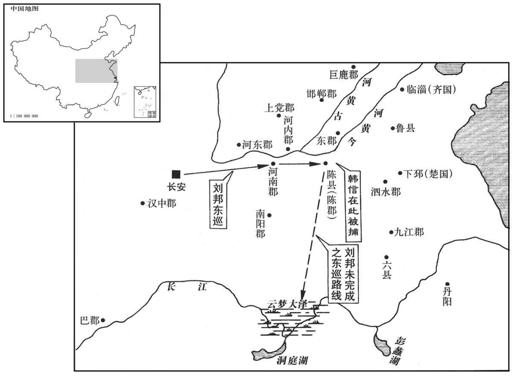
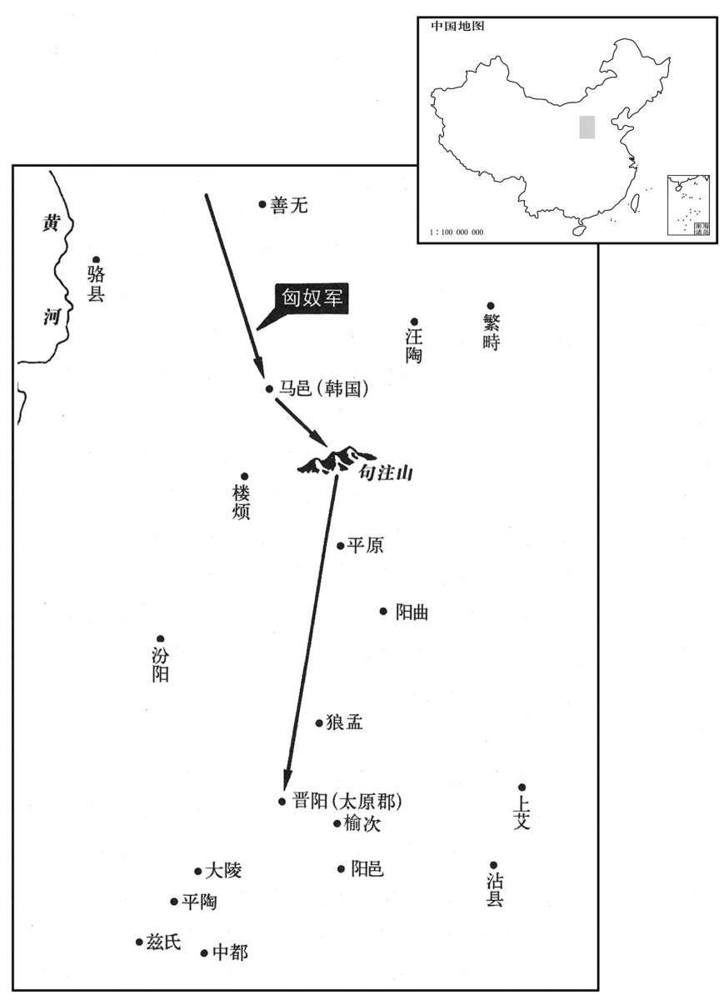
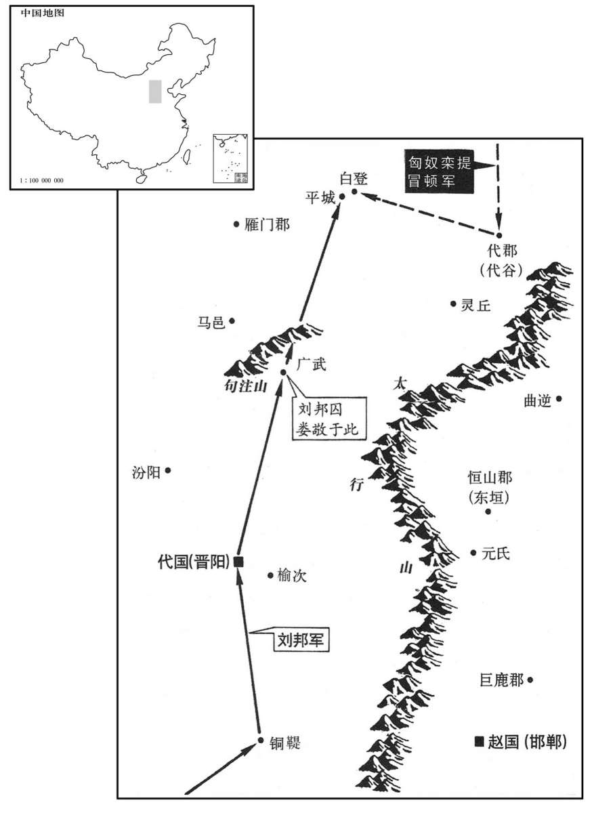
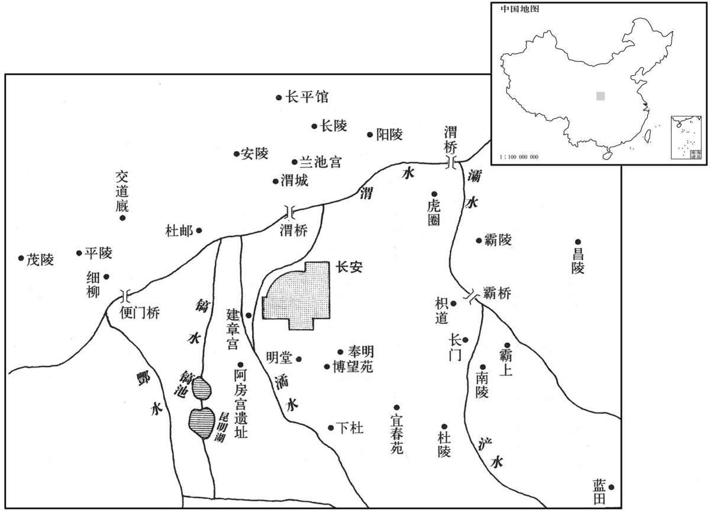

卷次与人物目录 / 卷11
资治通鉴 · 卷第十一【汉纪三】
公元前202年至公元前200年 · 原文、白话与胡三省注
本页按胡注本编排保存全卷内容。白话采用本站所据译本，未可靠对应的内容另列说明；事件标题用于定位，并非原书文字。
本卷共70段原文，70段有译文对应，0段缺译或待核对。
卷第十一【汉纪三】起屠维大渊献（己亥），尽重光赤奋若（辛丑），凡三年。
卷首原文与注释
太祖高皇帝中
公元前202年 · 汉太祖高皇帝五年
五年〔（己亥、前二○二）〕
本年事件索引（现代整理）
- 刘邦败于固陵，许地招韩信彭越
- 刘贾诱周殷叛楚，合九江兵会师
- 垓下四面楚歌，项羽突围南逃
- 项羽快战东城，自称天亡非战罪
- 项羽不渡乌江，自刎而死
- 鲁降汉，刘邦以鲁公礼葬项羽
- 太史公论项羽：恃武亡国不自省
- 扬雄论楚败：弃群策而自弱
- 刘邦驰入韩信营，夺其军
- 临江王共尉不降，被汉军俘获
- 韩信改封楚王，彭越封梁王
- 战事告终，刘邦大赦天下
- 刘邦即皇帝位，建立汉朝
- 吴芮封长沙王，无诸封闽越王
- 刘邦定都洛阳
- 汉军罢兵归家
- 刘邦令流民归乡，复田宅免役
- 刘邦论得天下：善用张良萧何韩信
- 韩信报漂母之恩，不报胯下之辱
- 刘邦召田横，许以王侯之位
- 田横自杀，门客五百人殉死
- 追叙朱家救季布，刘邦赦布任官
- 丁公曾放刘邦，战后以不忠被斩
- 司马光论诛丁公：守成须明臣节
- 娄敬张良劝都关中，刘邦西迁
- 张良功成欲退，托言从赤松子游
- 司马光论张良：明哲保身
- 六月大赦天下
- 燕王臧荼反，刘邦亲征
- 张耳吴芮卒
- 刘邦俘臧荼，立卢绾为燕王
- 利几反汉，刘邦击破之
- 汉修长乐宫
- 钟离昧投韩信，刘邦命楚捕昧
冬，十月，汉王追项羽至固陵，〔徐广曰：固陵在阳夏。晋灼曰：即固始县。余据班志，固始与阳夏为两县，皆属淮阳国。刘昭志：陈国阳夏县有固陵聚。括地志：固陵，县名，在陈州宛丘县西北四十二里。〕与齐王信、魏相国越期会击楚；信、越不至，楚击汉军，大破之。汉王复坚壁自守，谓张良曰：“诸侯不从，柰何？”对曰：“楚兵且破，二人未有分地，〔李奇曰：言信、越未有益地之分也。韦昭曰：信等虽名为王，未为分画疆界。分，扶问翻。余谓韦说是。〕其不至固宜；君王能与共天下，可立致也。齐王信之立，非君王意，〔言信自请为假王，乃立之耳，非君王本意。〕信亦不自坚，彭越本定梁地，始，君王以魏豹故拜越为相国；〔见上卷二年。〕今豹死，越亦望王，而君王不早定。今能取睢阳以北至谷城皆以王彭越，〔班志，睢阳县属梁国。刘昭志：谷城县属东郡，春秋之小谷也。括地志：谷城故城，在济州东阿县东二十六里。睢阳，宋州也。自宋州以北至济州谷城际黄河，尽以封彭越。〕从陈以东傅海与韩〔【章：甲十五行本“韩”作“齐”；乙十一行本同；孔本同。】〕王信。〔陈，古陈国，班志之淮阳国也；唐为陈州。自陈以东至于海并齐旧地，尽以与齐王信。〕信家在楚，其意欲复得故邑。能出捐此地以许两人。使各自为战，则楚易破也。”〔易，以豉翻。〕汉王从之。于是韩信、彭越皆引兵来。
冬季，十月，汉王刘邦追击项羽到达固陵，与齐王韩信、魏国的相国彭越约定日期合击楚军。但是韩信、彭越的军队没有来，楚军攻打汉军，大败了汉军。汉王于是重又坚固营垒加强防守，并对张良说：“诸侯不遵守信约，怎么办啊？”张良答道：“楚军即将被打败，而韩信、彭越二人没有分得确定的领地，因此他们不应约前来会合，原来是应当的。君王您如果能与他们一起共分天下，就可以立即把他们召来。齐王韩信的封立，并不是您的本意，韩信自己也不放心。彭越本来平定了梁地，当初您为了魏豹的缘故，封彭越为魏国相国。而今魏豹已死，彭越也想自己称王，但您却不早作决定。现在，您可以把从睢阳以北到城的地区都封给彭越，把从陈县以东到沿海地区的区域划给韩信。韩信的家乡在楚地，他的意思也是想要重新得到自己故乡的土地。您如果能拿出以上地区许给他们两人，让他们各自为自己的利益而战，那么楚国就很容易攻破了。”汉王听从了这一建议。于是韩信、彭越都率军前来。
十一月，刘贾南渡淮，围寿春，遣人诱楚大司马周殷。殷畔楚，以舒屠六，〔舒，春秋之舒国也。班志，舒县属庐江郡。括地志：舒，今庐江之故舒城是也。〕举九江兵迎黥布，〔史记正义曰：九江郡即寿州。楚考烈王二十二年徙寿春，号曰郢；至王负刍，为秦所灭，置九江郡；至唐为庐、寿、滁、濠等州之地。〕并行屠城父，随刘贾皆会。
十一月，刘邦的堂兄刘贾南渡淮河，包围了寿春，派人去诱降楚国的大司马周殷。周殷即反叛楚国，用舒地的兵力屠灭了六地，并调发九江的部队迎接黥布，一同去屠灭了城父，接着便随同刘贾等人一齐会合。
十二月，项王至垓下，〔李奇曰：沛洨县聚邑名。洨，下交翻。张揖三苍注：垓，堤名，在沛郡。史记正义曰：按垓下是高冈绝岩，今犹高三四丈；其聚邑及堤在垓之侧，因取名焉，今在亳州真源县东十里。垓，音该。〕兵少，食尽，与汉战不胜，入壁；汉军及诸侯兵围之数重。〔重，直龙翻。〕项王夜闻汉军四面皆楚歌，〔应劭曰：楚歌者，鸡鸣歌也。汉已略得楚地，故楚歌者多，鸡鸣时歌也。师古曰：楚歌者，为楚人之歌，犹吴歈、越吟耳。若以鸡鸣为歌曲之名，于理则可，不得云鸡鸣时也。高祖令戚夫人楚舞，自为作楚歌，岂有鸡鸣时乎！〕乃大惊曰：“汉皆已得楚乎，是何楚人之多也！”则夜起，饮帐中，悲歌忼慨，泣数行下，〔忼，苦广翻。行，户刚翻。泣，目中泪也。〕左右皆泣，莫能仰视。于是项王乘其骏马名骓，〔骓，朱惟翻。苍白杂毛曰骓。孔颖达曰：杂毛，是体有二种之色相间杂。〕麾下壮士骑从者八百余人，直夜，溃围南出驰走。平明，汉军乃觉之，令骑将灌婴以五千骑追之。项王渡淮，骑能属者才百余人。〔属，之欲翻。〕至阴陵，〔班志，阴陵县属九江郡。括地志：阴陵故城，在濠州定远县西北六十里。〕迷失道，问一田父，田父绐曰“左”。〔绐，荡亥翻；欺诳也。〕左，乃陷大泽中，以故汉追及之。
十二月，项羽到了垓下，兵少粮尽，与汉军交战未能取胜，便退入营垒固守。这时汉军和诸侯的军队将项羽的军营重重包围了起来。项羽在晚上听到汉军四面都唱起楚歌，就大惊道：“汉军已经全部得到楚国的土地了吗？是什么原因楚人这么多呀！”便连夜起身，在帐中饮酒，慷慨悲歌，泪下数行，侍从人员见状也都纷纷哭泣，全不忍心抬头观看。项羽于是骑上他的名叫骓的骏马，部下的壮士骑马相随的有八百多人，当夜即突围往南奔驰。天大亮时，汉军才发觉，便命令骑将灌婴率五千名骑士追赶。项羽渡过淮河，相随的骑兵能跟得上他的才一百多人。到达阴陵后，项羽一行人迷了路，就向一个农夫问路，农夫骗他说“往左”。但是项羽等往左走，却陷进了大沼泽地中。汉军因此便追上了他们。
项王乃复引兵而东，至东城，〔班志，东城县属九江郡。括地志：东城故城，在定远东南五十里。〕乃有二十八骑；汉骑追者数千人。项王自度不得脱，〔度，徒洛翻。〕谓其骑曰：“吾起兵至今，八岁矣；身七十余战，未尝败北，遂霸有天下。然今卒困于此，〔卒，子恤翻。〕此天之亡我，非战之罪也！今日固决死，愿为诸君快战，必溃围，斩将，刈旗，三胜之，令诸君知天亡我，非战之罪也。”乃分其骑以为四队，四乡。〔乡，读曰向。〕汉军围之数重。项王谓其骑曰：“吾为公取彼一将。”令四面骑驰下，期山东为三处。于是项王大呼驰下，汉军皆披靡，〔呼，火故翻。披，普彼翻。史记正义曰：靡，言精体低垂。〕遂斩汉一将。是时，郎中骑杨喜追项王，〔郎中骑，即汉官所谓骑郎。〕项王瞋目而叱之，喜人马俱惊，辟易数里。〔辟，频益翻。易，如字。师古曰：辟易，谓开张而易其故处。宋祁国语补音：易，以豉翻；未知其何据。〕项王与其骑会为三处，汉军不知项王所在，乃分军为三，复围之。项王乃驰，复斩汉一都尉，杀数十百人，复聚其骑，亡其两骑耳。乃谓其骑曰：“何如？”骑皆伏曰：“如大王言！”
项羽于是又领兵向东奔走，到达东城，相随的只有二十八个骑兵了。而这时汉军骑兵追逐前来的有好几千人。项羽自己料想是不能脱身了，便对他的骑崐兵们说：“我从起兵到现在，已经八年了，身经七十多次战斗，不曾失败过，这才霸有了天下。但是今天终于被困在这里，这是上天要灭亡我啊，并不是我用兵有什么过错！今天定要一决生死，愿为你们痛快地打一仗，一定突破重围，斩杀敌将、砍倒汉旗，接连三次取胜，让你们知道是天要亡我，而不是我用兵的过错。”随即把他的人马分为四队，向四个方向冲杀。但汉军已将他们重重包围。项羽便对他的骑兵们说：“看我为你们斩杀他一员将领！”就命令骑士们从四面奔驰而下，约定在山的东边分三处会合。接着项羽便大声呼喝着策马飞奔而下，汉军随即都溃败散乱，项羽就斩杀了一员汉将。这时，郎中骑杨喜追击项羽，项羽瞪着双眼厉声呵叱他，杨喜人马都受到惊吓，退避了好几里地。项羽便与他的骑兵们分三处相会合，汉军不知道项羽究竟在哪里，于是分兵三路，重又把他们包围了起来。项羽随即奔驰冲杀，又斩杀了汉军的一名都尉，杀掉了汉军百十来人，重新聚拢了他的骑兵，至此不过仅损失了两名骑士罢了。项羽就对他的骑兵们说：“怎么样啊？”骑兵们都敬服地说：“正像大王您所说的一样！”
于是项王欲东渡乌江，〔臣瓒曰：乌江在牛渚。索隐曰：按晋初属临淮。括地志：乌江亭，即和州乌江县是也；晋初为县。水经曰：江水又北得黄律口，汉书所谓乌江亭长檥船待项王，即此地。余据乌江浦在今和州乌江县东五十里，即亭长檥船待羽处。〕乌江亭长檥船待，〔徐广曰：檥，音仪，一音俄。应劭曰：檥，正也。孟康曰：檥，音蚁，附也，附船着岸也。如淳曰：南方谓整船向岸曰檥。索隐曰：檥字，诸家各以意解耳。邹诞本作“样船”，以尚翻；刘氏亦有此音。〕谓项王曰：“江东虽小，地方千里，众数十万人，亦足王也。愿大王急渡；今独臣有船，汉军至，无以渡。”项王笑曰：“天之亡我，我何渡为！且籍与江东子弟八千人渡江而西，今无一人还；纵江东父兄怜而王我，我何面目见之！纵彼不言，籍独不愧于心乎！”乃以所乘骓马赐亭长，令骑皆下马步行，持短兵接战。独籍所杀汉军数百人，身亦被十余创。〔被，皮义翻。创，初良翻。〕顾见汉骑司马吕马童，曰：“若非吾故人乎？”马童面之，〔张晏曰：以故人难亲斫之，故背之也。如淳曰：面，谓不正视也。师古曰：如说非。面，谓背之，不正向也，面缚，亦反偝而缚之；杜元凯以为但见其面，非也。贡父曰：面之，直向之耳。〕指示中郎骑王翳曰：“此项王也。”项王乃曰：“吾闻汉购我头千金，邑万户；〔史记正义曰：汉以一斤金为千金，当一万钱也。余谓一斤金与万户邑，多少不称，正义之说，未可为据也。〕吾为若德。”〔班书，“德”作“得”；邓展曰：令公得我以为功也。史记作“德”；徐广曰：亦可是功德之德。史记正义曰：为，于伪翻。言吕马童与已是故人，旧有恩德于己。余谓羽盖谓我为汝自刎以德汝。〕乃自〔【章：甲十五行本无“自”字；乙十一行本同；孔本同。】〕刎而死。〔刎，武粉翻。〕王翳取其头；余骑相蹂践〔蹂，人九翻。〕争项王，相杀者数十人；最其后，杨喜、吕马童及郎中吕胜、杨武各得其一体；五人共会其体，皆是，故分其户，封五人皆为列侯。〔吕马童封中水侯，王翳封杜衍侯，杨喜封赤泉侯，杨武封吴防侯，吕胜封涅阳侯。〕
这时项羽就想东渡乌江，乌江亭长把船停泊在岸边等着他，并对项羽说：“江东虽然狭小，土地方圆千里，民众几十万人，却也足够用以称王的了。望大王您火速渡江！现在只有我有船，汉军到来，无船渡江。”项羽笑着说：“上天要灭亡我，我还要渡江做什么呀！况且我与江东子弟八千人渡江西征，而今没有一个人归还，纵使江东父老怜爱我，仍然以我为王，我又有什么脸面去见他们啊！即便他们不说什么，难道我就不感到心中有愧吗！”于是就把自己所骑的骏马骓送给了亭长，命令他的骑兵都下马步行，手持短兵器与汉军交战。仅项羽一人就杀死了汉军几百人，项羽自己也身受十多处伤。这时项羽回头看见了汉军骑司马吕马童，就说：“你不是我的老朋友吗？”吕马童背过脸，指给中郎骑王翳说：“这就是项王！”项羽便说道：“我听说汉王悬赏千金买我的头颅，分给万户的封地，我就留给你一些恩德吧！”即自刎而死。王翳随即取下项羽的头颅。其余的骑兵便相互践踏着争抢项羽的躯体，互为残杀的有几十个人。到了最后，杨喜、吕马童和郎中吕胜、杨武各夺得项羽的一部分肢体。五个人把项羽的肢体会合拼凑到一起，都对得上，因此便分割原来悬赏的万户封地，将五人都封为列侯。

楚地悉定，独鲁不下；〔秦，鲁县属薛郡，项羽初封于此，汉为鲁国。〕汉王引天下兵欲屠之。至其城下，犹闻弦诵之声；为其守礼义之国，为主死节，乃持项王头以示鲁父兄，鲁乃降。汉王以鲁公礼葬项王于谷城，〔宋白曰：宋州谷熟县，古谷城也，汉于此置薄县，又改为谷阳县。〕亲为发哀，哭之而去。〔为，于伪翻。〕诸项氏枝属皆不诛。封项伯等四人皆为列侯，赐姓刘氏；诸民略在楚者皆归之。
楚地全部平定了，唯独鲁县仍不投降。汉王刘邦率领天下的兵马，打算屠灭它。大军抵达城下，仍然能听到城中礼乐弦诵的声音，由于鲁县是信守礼义的故国，为自己的君主尽忠守节，汉军便拿出项羽的头颅给鲁县的父老看，鲁县这才投降。汉王用葬鲁公的礼仪把项羽葬在城，并亲自为项羽发丧举哀，哭了一阵后离去。对项羽的家族亲属都不加杀害，还把项伯等四人都封为列侯，赐他们姓刘，将过去被掳掠到楚国来的百姓们仍归他们统治。
史家评论 · 原文及其白话
太史公曰：羽起陇畮之中，〔畮，古亩字。〕三年，遂将五诸侯灭秦，〔此时山东六国，而齐、赵、韩、魏、齐并起，从羽伐秦，故云五诸侯。〕分裂天下而封王侯，政由羽出；位虽不终，近古以来未尝有也！及羽背关怀楚，〔师古曰：背关，谓背约不王沛公于关中；怀楚，谓思东归彭城也。余谓背关怀楚，文意一贯，言羽弃背关中之形胜而怀乡归楚也，不必分为两节。背，蒲妹翻。〕放逐义帝而自立；怨王侯判己，难矣！自矜功伐，奋其私智而不师古，谓霸王之业，欲以力征经营天下。五年，卒亡其国，〔卒，子恤翻。〕身死东城；尚不觉悟而不自责，乃引“天亡我，非用兵之罪也，”岂不谬哉！
太史公司马迁曰：项羽起于田野民间，才三年就率领着齐、赵、韩、魏、崐燕五诸侯国的军队灭亡了秦朝，分割天下而封授王侯，政令全由项羽发布，他的王位虽然未获终结，却也是近古以来所不曾有过的了！待到项羽背弃关中而怀恋楚国故土，放逐义帝而自立为王，这时怨恨诸侯王们背叛自己，可就很难说得通了！还自我夸耀战功，一味逞个人小聪明而不效法古人，认为霸王的功业，就是要用武力征伐来经营治理天下。结果只五年的时间，终于失掉了自己的国家，自身死在东城，却还不觉悟、不责备自己，反倒借口“上天要灭亡我，而并非我用兵的过错”，这难道不是荒谬之极吗！
史家评论 · 原文及其白话
扬子法言：或问：“楚败垓下，方死，曰『天也！』谅乎？”曰：“汉屈群策，群策屈群力；〔谅，信也。屈，尽也。〕楚憞群策而自屈其力。〔憞，徒对翻，恶也。〕屈人者克，自屈者负；天曷故焉！”〔温公曰：何预天事。〕
扬雄《法言》曰：有人问：“楚王兵败垓下，将要死的时候说道：‘是上天亡我！’可以相信这种说法吗？”回答说：“汉王刘邦尽量发挥、利用众人的计谋，这些计谋调动了众人的力量。楚王项羽憎恶采用众人的计谋，只发挥个人的作用。而善于发挥、利用众人智谋和力量的人就能取得胜利，只凭一己的智谋和力量的人就必定失败，这与上天有什么关系啊！”
汉王还，至定陶〔班志，定陶县属济阴郡，古之陶邑；宋为广济军理所。〕驰入齐王信壁，夺其军。
汉王回军到达定陶县，奔入齐王韩信的营垒，接管了他的部队。
临江王共尉不降，〔共敖，项羽封为临江王；尉，其子也。〕遣卢绾、刘贾击虏之。
临江王共尉仍不归降，汉王便派卢绾、刘贾攻打并俘获了他。
春，正月，更立齐王信为楚王，王淮北，都下邳。〔更，工衡翻。〕封魏相国建城侯彭越为梁王，王魏故地，都定陶。
春季，正月，汉王改封齐王韩信为楚王，统辖淮河以北地区，都城设在下邳。封魏相国建城侯彭越为梁王，统辖魏国故地，都城设在定陶。
令曰：“兵不得休八年，万民与苦甚；〔如淳、师古皆曰与，弋庶翻。贡父曰：与，读曰欤，助辞。〕今天下事毕，其赦天下殊死以下。”〔如淳曰：殊死，死罪之明白也；左传曰：斩其木而弗殊。韦昭曰：殊死，斩刑也。师古曰：殊，绝也，异也；言其身首离绝而异处。贡父曰：予按说文：汉蛮夷殊。然则殊自死刑之名。〕
汉王下令说：“军队得不到休整已经八年了，万民饱受战乱之苦。现在夺取天下的大事已经完成，赦免天下判斩刑以下的所有罪犯。”
诸侯王皆上疏请尊汉王为皇帝。二月甲午，王即皇帝位于泛水之阳。〔蔡邕曰：上古天子称皇，其次称帝，其次称王。秦承三王之末，自以德兼三皇、五帝，故并以为号。汉高受命，因而不改。张晏曰：泛水在济阴界，取其泛爱弘大而润下也。师古曰：据叔孙通传：为皇帝于定陶，则此水在济阴是也。括地志：汉高祖即位坛，在曹州济阴县界。泛，敷剑翻。〕更王后曰皇帝，太子曰皇太子；追尊先媪曰昭灵夫人。〔高祖母曰刘媪。文颖曰：幽州及汉中皆谓老妪为媪。师古曰：媪，女老称，音乌老翻。〕
诸侯王一致上疏，请求推尊汉王为皇帝。二月甲午（初三），汉王便在水北面登上帝位。改称王后为皇后，王太子为皇太子；追尊先母为昭灵夫人。
昭曰：〔如淳曰：诏，告也。自秦、汉以下，惟天子独称之。汉制度：帝之下书有四：一曰策书，二曰制书，三曰诏书，四曰诫敕。策书者，编简也，其制长二尺，短者半之；篆书，起年月日，称皇帝以命诸侯王；三公以罪免，亦赐策，而以隶书，用尺一木，两行，此为异也。制书，帝者制度之命。其文曰“制诏三公”，皆玺封，尚书令印重封，露布州郡也。诏书，昭，告也，其文曰“告某官如故事”。诫敕，谓敕刺史、太守，其文曰“有诏，敕某官”。他皆仿此。〕“故衡山王吴芮，从百粤之兵，佐诸侯，诛暴秦，有大功；诸侯立以为王，项羽侵夺之地，谓之番君。其以芮为长沙王。”〔吴芮封衡山王，都邾；今封长沙王，都临湘。番，蒲何翻。〕又曰：“故粤王无诸，世奉粤祀；秦侵夺其地，使其社稷不得血食。诸侯伐秦，无诸身率闽中兵以佐灭秦，项羽废而弗立。今以为闽粤王，王闽中地。”〔粤王无诸，句践之后；秦取其地置闽中郡；今复以封之。师古曰：闽越，今泉州、建安是其地。徐广曰：今建安侯官地。史记正义曰：今闽州又改为福。应劭曰：闽，音文饰之文。师古曰：非也；音缗。闽人本蛇种，故其字从“虫”。〕
颁布诏书说：“原衡山王吴芮，率领百粤部族之兵，协助诸侯军，诛灭残暴的秦王朝，建有大功，诸侯立他为王，但项羽却侵夺了他的封地，称他作番君。现在改封吴芮为长沙王。”又说：“原粤王无诸，世代供奉粤国的祖宗。秦王朝侵夺了他的土地，使粤国的社稷不能再享受祭祀。诸侯征伐秦朝，无诸亲自率领闽中的军队相协助，攻灭了秦王朝，项羽却将他废黜不予封立。现在封无诸为闽粤王，统辖闽中一带。”
帝西都洛阳。
高帝刘邦向西建都洛阳。
夏，五月，兵皆罢归家。
夏季，五月，士兵们都复员回家。
诏：“民前或相聚保山泽，不书名数。今天下已定，令各归其县，复故爵、田宅；〔复，扶目翻，还也。〕吏以文法教训辨告，〔师古曰：辨告曰，分别义理以晓喻之。〕勿笞辱军吏卒；爵及七大夫以上，皆令食邑，〔臣瓒曰：秦制：列侯乃得食邑。今七大夫以上皆食邑，所以宠之也。师古曰：七大夫，公大夫也；爵第七，故谓之七大夫。〕非七大夫已下，皆复其身及户，勿事。”〔应劭曰：不输户赋也。如淳曰：事，谓役使也。师古曰：复其身及一户之内皆不傜赋也。复，方目翻。〕
高帝刘邦颁布诏书：“百姓中以前有的人相聚安守在深山大泽中躲避战乱，未登记入户籍中。如今天下已经平定，诏令这些百姓各自返回他们的所在县，恢复他们过去的爵位和田地住宅；官吏应依据法律义理进行教诲，处理纠纷，不得鞭笞侮辱军中官兵；凡爵位至七大夫以上的，都让他们享用封地民户的赋税收入，非七大夫爵位及其以下的，都免除其个人及一户之内的赋税徭投，不予征收。”
帝置酒洛阳南宫，〔括地志：南宫，在洛州洛阳县东北二十六里洛阳故城中。舆地志：秦时，洛阳已有南、北宫。〕上曰：〔蔡邕曰：上者，尊位所在也；但言上，不敢言尊号耳。〕“彻侯、诸将毋敢隐朕，皆言其情：〔彻，通也。应劭曰：言其功德通于王室也。后避武讳，改曰通侯，亦曰列侯。〕吾所以有天下者何？项氏之所以失天下者何？”高起、王陵对曰：〔张晏曰：诏使高官者起，故陵先对。臣瓒曰：汉帝年纪有信平侯臣陵、都武侯臣起。魏相、邴吉秦：高祖时，秦事有将军臣陵、臣起。师古曰：张说非也。若言高官者起，则丞相萧何、太尉卢绾以张良、陈平之属皆在，陵不得而先对也。姓谱：齐太公之后，食采于高，因氏焉。〕“陛下使人攻城略地，因以与之，与天下同其利；项羽不然，有功者害之，贤者疑之，此其所以失天下也。”上曰：“公知其一，未知其二。夫运筹帷幄之中，决胜千里之外，吾不如子房；填国家，抚百姓，给饷馈，不绝粮道，吾不如萧何；〔填，读曰镇。馈，与馈同。〕连百万之众，战必胜，攻必取，吾不如韩信。三者皆人杰，吾能用之，此吾所以取天下者也。项羽有一范增而不能用，此所以为我禽也。群臣说服。〔说，读曰悦。〕
高帝刘邦在洛阳南宫举行酒宴，高帝说道：“各位列侯、各位将军，不要对朕隐瞒，都来说说这个道理：我之所以能取得天下的原因是什么？项羽之所以失掉天下的原因又是什么呀？”高起、王陵回答说：“陛下派人攻城掠地，攻取了城邑、土地就分封给他，与大家同享利益；项羽却不是这样，他对有功的人嫉恨，对贤能的人猜疑，这就是他失去天下的原因。”高帝说：“你们是只知其一，不知其二啊。谈到运筹帷幄之中，决胜千里之外，我不如张良；镇守国家，安抚百姓，供给粮饷，保持运粮道路畅通无阻，我不如萧何；统率百万大军，战必胜，攻必克，我不如韩信。这三位都是人中英杰，而我能够任用他们，这就是我所以能取得天下的原因。项羽虽然有一个范增，却不能信任使用他，这便是项羽所以被我捕捉打败的原因了。”群臣都心悦诚服。
本段人物：萧何
韩信至楚，召漂母，赐千金。召辱己少年令出跨下者，以为中尉；〔事见九卷元年。漂，匹妙翻。〕告诸将相曰：“此壮士也。方辱我时，我宁不能杀之邪？杀之无名，故忍而就此。”
韩信到了楚地，召见曾经分给自己饭吃的那位漂洗丝绵的老妇，赐给她一千金。又召见曾经羞辱自己、叫自己从胯下爬过去的那个人，任命他为楚国的中尉；并告诉将相们说：“这是位壮士啊。当他侮辱我时，我难道就不能杀了他吗？只是杀他没有名义，所以忍了下来，才达到了今天这样的成就。”
彭越既汉封，田横惧诛，与其徒属五百余人入海，居岛中。〔海中山曰岛。史记正义曰：海州东海县有岛山，去岸八十里。余按北史，杨愔避谗东入田横岛，是岛以横居之而得名。岛，丁老翻。〕帝以田横兄弟本定齐地，齐贤者多附焉；今在海中，不敢，后恐为乱。乃使使赦横罪，召之。横谢曰：“臣烹陛下之使郦生，〔事见上卷四年。〕今闻其弟商为汉将；臣恐惧，不敢奉诏，请为庶人，守海岛中。”使还报，帝乃诏卫尉郦商曰：〔班表：卫尉，秦官，掌宫门卫屯兵。〕“齐王田横即至，人马从者敢动摇者，致族夷！”〔从，才用翻。言诛夷其族也。〕乃复使使持节具告以诏商状，〔周礼：司节掌守邦节，辨其用以辅王命。注云：节者，执以行为信。邦节，珍圭、牙璋、谷圭、琬圭、琰圭也。守邦国用玉节，以玉为之；守都鄙用角节，以角为之。邦国之使，节用金；门关之节，用符；货贿之节，用玺；道路之节，用旌。审此，则古之所执以为信者，皆谓之节。自秦以来，有玺、符、节，则玺自玺，符自符，节自节，分为三矣。汉之节，即古之旌节也。郑氏注以符节为汉宫中诸宫诏符，玺节为汉之印章，旌节为汉使者所持节；则知汉所谓节，盖古之旌节也。贤曰：节者，所以为信，以竹为之，柄长八尺，以旄牛尾为之，毦三种。此汉制也。〕曰：“田横来，大者王，小者乃侯耳；不来，且举兵加诛焉。”
彭越已受汉封梁王，田横怕被杀掉，与他的部下五百多人进入大海，居住在岛上。高帝刘邦认为田横兄弟几人本来曾平定了齐地，齐地贤能的人大都归附了他，今流亡在海岛中，如不加以招抚，以后恐怕会作乱。于是就派使者去赦免田横的罪过，召他前来。田横推辞说：“我曾煮杀了陛下的使臣郦食其，现在听说他的弟弟郦商是汉的将领，我很害怕，不敢奉诏前往，只请求做个平民百姓，留守在海岛中。”使者回报，高帝便诏令卫尉郦商说：“齐王田横即将到来，有敢动一动他的随从人马的人，即诛灭家族！”随即再派使者拿着符节把高帝诏令郦商的情况对田横一一讲明，并说道：“田横若能前来，高可以封王，低也是个侯哇。如果不来，便要发兵加以诛除了。”
横乃与其客二人乘傅诣洛阳。〔如淳曰：四马，高足为置传，中足为驰传，下足为乘传；一马、二马为轺传。急者乘一乘传。师古曰：盖今之驿，古者以车，谓之传车；其后单置马，谓之驿骑。汉律：诸当乘传及发驾置传者，皆持尺五寸木传信，封以御史大夫印章；其乘传，参封之，参，三也；有期会，累封两端，端各两封，凡四封；乘置驰传，五封之，两端各二，中央一；轺传，两马再封之；一马一封，以马驾轺车而乘传曰一封轺传。史照所谓依乘符传而行者本此；但择焉而不精，语焉而不详耳，终不若颜说简而明。传，张恋翻。〕未至三十里，至尸乡置。〔应劭曰：尸乡，在偃师城西。臣瓒曰：按置，谓置马以传驿者。〕横谢使者曰：“人臣见天子，当洗沐。”因止留，谓其客曰：“横始与汉王俱南面称孤；〔师古曰：王者自称曰孤，盖为谦也。老子道德经曰：贵以贱为本，高以下为基，是以侯王自谓孤、寡、不谷。〕今汉王为天子，而横乃为亡虏，北面事之，其耻固已甚矣。且吾烹人之兄，与其弟并肩而事主；〔并，步顶翻。〕纵彼畏天子之诏不敢动，我独不愧于心乎！且陛下所以欲见我者，不过欲一见吾面貌耳；今斩吾头，驰三十里间，形容尚未能败，犹可观也。”遂自刭，令客奉其头，从使者驰奏之。帝曰：“嗟乎！起自布衣，兄弟三人更王，岂不贤哉！”〔更，工衡翻。〕为之流涕，而拜其二客为都尉；发卒二千人，以王者礼葬之。〔史记正义曰：田横墓在偃师西十五里。〕既葬，二客穿其冢傍孔，皆自刭，下从之。帝闻之，大惊。以横客皆贤，余五百人尚在海中，使使召之；至，则闻田横死，亦皆自杀。
田横便和他的两个宾客乘坐驿站的传车去到洛阳。离洛阳还有三十里，到达尸乡驿站。田横向使者道歉说：“为人臣子的人觐见天子时，应当沐浴。”随即住下来，对他的宾客说：“我起初与汉王一道面朝南称王，而今汉王做了天子，我却是作为败亡的臣虏，面北称臣伺候他，这耻辱本来已非常大了。何况我还煮死了人家的兄长，又同被煮人的弟弟并肩侍奉他们的君主呢。即便这位弟弟畏惧天子的诏令不敢动我，我难道内心就不感到惭愧吗？！况且陛下想要见我的原因，不过是想看一看我的容貌罢了。现在斩下我的头颅，奔驰三十里地送去，神态容貌还不会变坏，仍然可以看的。”于是就用刀割自己的脖子崐，并让宾客捧着他的头颅，随同使者疾驰洛阳奏报。高帝说：“唉呀！从平民百姓起家，兄弟三人相继为王，这难道不是很贤能的吗！”为田横流下了眼泪。接着授给田横的两个宾客都尉的官职，调拨士兵二千人，按葬侯王的礼仪安葬了田横。下葬以后，那两位宾客在田横的坟墓旁挖了个坑，都自刎而死，倒进坑里陪葬田横。高帝听说了这件事，大为震惊，认为田横的宾客都很贤能，余下的五百人还在海岛上，便派使者去招抚他们。使者抵达海岛，这五百人听说田横已死，也都自杀了。
初，楚人季布为项籍将，〔季，姓也。周八士有季随、季騧；鲁有季氏。〕数窘辱帝。〔数，所角翻。窘，巨陨翻，困也。〕项籍灭，帝购求布千金；敢有舍匿，罪三族。〔舍，止也。匿，隐也。〕布乃髡钳为奴，自卖于鲁朱家。〔刷髡，枯昆翻，鬄其发也。钳，其炎翻，以铁束项。朱家，鲁之大侠。〕朱家心知其季布也，买置田舍；身之洛阳见滕公，说曰：“季布何罪！臣各为其主用，职耳；〔师古曰：职，常也；言此乃常道也。一曰：职，主掌其事也。为，于伪翻。〕项氏臣岂可尽诛邪？今上始得天下，而以私怨求一人，何示不广也！且以季布之贤，汉求之急，此不北走胡，南走越耳。夫忌壮士以资敌国，此伍子胥所以鞭荆平之墓也。〔伍子胥，楚大夫伍奢之子也。楚平王信谗而杀伍奢，子胥奔吴，藉吴师以破楚，入郢，发平王墓而鞭其尸。〕君何不从容为上言之！”〔从，千客翻。〕滕公待间，言于上，如朱家指。上乃赦布，召拜郎中，朱家遂不复见之。〔复，扶又翻。〕
当初，楚地人季布是项羽手下的将领，曾多次窘困羞辱汉王。项羽灭亡后，高帝刘邦悬赏千金捉拿季布，下令说有敢收留窝藏季布的，罪连三族。季布于是剃去头发，用铁箍卡住脖子当奴隶，把自己卖给鲁地的大侠朱家。朱家心里明白这个人是季布，就将他买下安置在田庄中。朱家随即到洛阳去进见滕公夏侯婴，劝他道：“季布有什么罪啊！臣僚各为他的君主效力，这是常理。项羽的臣下难道可以全都杀掉吗？如今皇上刚刚取得天下，便借私人的怨恨去寻捕一个人，怎么这样来显露自己胸襟的狭窄呀！况且根据季布的贤能，朝廷悬赏寻捕他如此急迫，这是逼他不向北投奔胡人，便往南投靠百越部族啊！忌恨壮士而以此资助敌国，这是伍子胥所以要掘墓鞭打楚平王尸体的缘由呀。您为什么不从容地向皇上说说这些道理呢？”滕公于是就待有机会时，按照朱家的意思向高帝进言，高帝便赦免了季布，并召见他，授任他为郎中。朱家从此也就不再见季布。
布母弟丁公，亦为项羽将，逐窘帝彭城西。短兵接，帝急，顾谓丁公曰：“两贤岂相哉！”〔孟康曰：丁公及彭城赖齮追上，故曰两贤也。师古曰：孟说非也。两贤者，高祖自谓并与固也，言吾与固俱是贤，岂相困哉！故固感此言而止也。虽与赖齮同追，而高祖独与固言也。姓谱：丁本自姜姓，齐太公子谥丁公，因以命氏。〕丁公引兵而还。及项王灭，丁公谒见。〔见，贤遍翻。〕帝以丁公徇军中，〔徇，辞峻翻。师古曰：行示也。〕曰：“丁公为项王臣不忠，使项王失天下者也。”遂斩之，曰：“使后为人臣无效丁公也！”
季布的舅父丁公，也是项羽手下的将领，曾经在彭城西面追困过高帝刘邦。短兵相接，高帝感觉事态危急，便回头对丁公说：“两个好汉难道要相互为难困斗吗！”丁公于是领兵撤还。等到项羽灭亡，丁公来谒见高帝。高帝随即把丁公拉到军营中示众，说道：“丁公身为项王的臣子却不忠诚，是使项王失掉天下的人啊！”就把他杀了，并说：“让后世为人臣子的人不要效法丁公！”
史家评论 · 原文及其白话
臣光曰：高祖起丰、沛以来，罔罗豪桀，招亡纳叛，亦已多矣。及即帝位，而丁公独以不忠受戮，何哉？夫进取之与守成，其势不同。当群雄角逐之际，民无定主；来者受之，固其宜也。及贵为天子，四海之内，无不为臣；苟不明礼义以示之，使为臣者，人怀贰心以徼大利，则国家其能久安乎！是故断以大义，〔断，丁乱翻。〕使天下晓然皆知为臣不忠者无所自容；而怀私结恩者，虽至于活己，犹以义不与也。戮一人而千万人惧，其虑事岂不深且远哉！子孙享有天禄四百余年，宜矣！
臣司马光曰：汉高祖刘邦从丰、沛起事以来，网罗强横有势力的人，招纳逃亡反叛的人，也已经是相当多的了。待到登上帝位，唯独丁公因为不忠诚而遭受杀戮，这是为什么啊？是由于进取与守成，形势不同的缘故呀。当群雄并起争相取胜的时候，百姓没有确定的君主，谁来投奔就接受谁，本来就该如此。待到贵为天子，四海之内无不臣服时，如果不明确礼义以显示给人，致使身为臣子的人，人人怀有二心以图求取厚利，那么国家还能长治久安吗！因此汉高祖据大义作出决断，使天下的人都清楚地知道，身为臣子却不忠诚的人没有自己可以藏身的地方，怀揣个人目的布施恩惠给人的人，尽管他甚至于救过自己的命，依照礼义仍不予宽容。似此杀一人而使千万人畏惧，考虑事情难道不是既深刻又远广吗！汉高帝的子孙享有上天赐予的禄位四百多年，应当的啊！
齐人娄敬戍陇西，〔姓谱：娄，邾娄国之后；一曰：离娄之后。〕过洛阳，脱挽辂，〔苏林曰：辂，音冻冲（中改各）之冲（中改各）；一木横遮车前，一人挽之，三人推之。师古曰：挽，音晚。辂，胡格翻；冲（中改各）音同。〕衣羊裘，因齐人虞将军求见上。虞将军欲与之鲜衣。娄敬曰：“臣衣帛，衣帛见；衣褐，衣褐见；〔衣，着也。帛，缯也。褐，织毛布之衣也。〕终不敢易衣。”于是虞将军入言上；上召见，问之。娄敬曰：“陛下都洛阳，岂欲与周室比隆哉？”上曰：“然。”娄敬曰：“陛下取天下与周异。周之先，自后稷封邰，〔班志，邰县属右扶风。师古曰：即今武功故城是。史记正义曰：雍州武功县西南二十三里，故漦城是也。说文曰：邰，炎帝之后姜姓所封国，弃外家也。毛苌云：邰，姜嫄国，尧以天因邰而生后稷故，因封之于邰；音吐才翻。〕积德絫善，〔絫，古累字。〕十有余世，至于太王、王季、文王、武王而诸侯自归之，遂灭殷为天子。及成王即位，周公相焉，乃营洛邑，以为此天下之中也，诸侯四方纳贡职，道里均矣。有德则易以王，无德则易以亡。故周之盛时，天下和洽，诸侯、四夷莫不宾服，效其贡职。及其衰也，天下莫朝，〔朝，直遥翻。〕周不能制也；非唯其德薄也，形势弱也。今陛下起丰、沛，卷蜀、汉，定三秦，〔卷，读曰卷。〕与项羽战荥阳、成皋之间，大战七十，小战四十；天下之民，肝脑涂地，父子暴骨中野，不可胜数，〔胜，音升。〕哭泣之声未绝，伤夷者未起；〔夷，与痍同，创也，音延知翻。〕而欲比隆于成、康之时，臣窃以为不侔也。且夫秦地被山带河，四塞以为固；卒然有急，〔卒，读曰猝。〕百万之众可立具也。因秦之故，资甚美膏腴之地，此所谓天府者也。〔府，聚也；万物所聚，谓之天府。〕陛下入关而都之．山东虽乱，秦之故地可全而有也。夫与人斗，不搤其亢，拊其背，未能全其胜也；〔张晏曰：搤，与扼同，促持之也。亢，音冈，又下郎翻，喉咙也。〕今陛下案秦之故地，此亦搤天下之亢而拊其背也。”帝问群臣。群臣皆山东人，争言：“周王数百年，秦二世即亡。洛阳东有成皋，西有肴、渑，〔师古曰：肴，谓肴山，今陕州东二肴山是也。渑，即渑池。〕倍河，乡伊、洛，〔河在洛阳城北，故曰倍；伊、洛二水在洛阳城南，故曰乡。倍，蒲妹翻。乡，读曰向。〕其固亦足恃也。”上问张良。良曰：“洛阳虽有此固，其中小不过数百里，田地薄，四面受敌，此非用武之国也。关中左肴、函，右陇、蜀，沃野千里；〔师古曰：沃者，溉灌也；言其土地皆有溉灌之利，故曰沃野。〕南有巴、蜀之饶，北有胡苑之利。〔师古曰：谓安定、北地、上郡之北与胡相接之地，可以畜牧者也。养禽兽谓之苑，音于阮翻。〕阻三面而守，独以一面东制诸侯；诸侯安定，河、渭漕挽天下，西给京师；〔汉漕关东之时，自河入渭，自渭而上输之长安。〕诸侯有变，顺流而下，足以委输；〔康曰：委，于伪切，即委积之委。输，即转输之输。输，舂遇翻。〕此所谓金城千里，天府之国也。〔府者，物所聚也。天物所聚，不假人力，故曰天府。〕娄敬说是也。”上即日车驾西，都长安。拜娄敬为郎中，号曰奉春君，赐姓刘氏。〔师古曰：凡言车驾，谓天子乘车而行，天敢指斥也。长安，本秦之乡名也，高祖作都。奉春君，张晏曰：春，岁之始也；今娄敬发事之始，故曰奉春君也。〕
故齐国人娄敬去防守陇西，经过洛阳，解下绑在车前牵引的横木，穿着羊皮袄，通过齐人虞将军求见高帝刘邦。虞将军想要给他穿华丽鲜亮的衣服，娄敬说：“我若穿的是丝绸，就身着丝绸去谒见；若穿的是粗毛麻布，就身着粗毛麻布去谒见，终究不敢冒昧地更换衣服。”这时虞将军便进去向高帝报告。高帝即召见娄敬，并询问他。娄敬说：“陛下定都洛阳，难道是想与周王朝一比隆盛威势吗？”高帝道：“是啊。”娄敬说：“陛下夺取天下的途径与周朝不同。周朝的祖先，从后稷被唐尧封在邰地起，积累德政善行十多代，以至于到太王、王季、文王、武王时期，诸侯自行归附，终于灭掉殷商作了天子。到了周成王登位，周公辅佐他，才营建洛邑，因为认为这里是天下的中心，各地诸侯前往交纳土贡和赋税，所走的道路里程相等。君主有德行就容易靠此统治天下，没有德行就容易由此而亡国。所以周王朝强盛的时候，天下和睦，诸侯、四方外族没有不臣服，奉上他们的贡赋的。待到周王朝衰弱时，天下没有谁前来朝贡，周王朝也已无法驾驭制约了。这不仅是由于它的德行微薄，而且是由于形势衰弱了的缘故。如今陛下从丰、沛起兵抗秦，席卷蜀郡、汉中郡，平定秦地雍、塞、翟三国，与项羽在荥阳、成皋之间作战，经过大战七十次，小战四十次，使天下百姓肝脑涂地惨遭杀戮，老老少少的尸骨暴露在荒野之中，数都数不过来，哭泣的悲声还未断绝，伤残的人员还不能行走，就想与周成王、康王时代的隆盛威势相比美，我私下里认为这是很不相称的。况且秦地依靠华山濒临黄河，四面都有险要关隘为屏障，如果突然有紧急情况发生，百万军队可以立即就调动停当。依靠秦地原有的基础，凭借那里富饶肥沃的土地，这即是所谓的天然府库的优势啊。陛下入函谷关在那里建都，崤山以东地区就算是乱了，秦国的旧地也仍然可以完整地据有。同别人争斗，不卡住他的咽喉，从后背拍击他，是不能大获全胜的。现在陛下如果能占据秦国的故地，这也即是扼住了天下的咽喉且又攻击它的后背了。”高帝询问群臣。群臣都是崤山以东地区的人，便抢着发言：“周朝统治了几百年，而秦朝经历两代就灭亡了。洛阳东有成皋，西有崤山、渑池，背靠黄河，面向伊、洛二河，它的坚固也是足可依赖的了。”高帝又问张良。张良说：“洛阳虽然有这样稳固的地势，但它的中心地区狭小，方圆不过几百里，田地贫瘠，四面受敌，因此这里不是用武之地。而关中地区东有崤山、函谷关，西有陇山、蜀地的岷山，沃野千里，南有巴、蜀的富饶资源，北有胡地草场畜牧的地利。倚仗三面险要的地形防守，只用东方一面来控制诸侯。倘若诸侯安定，即可通过黄河、渭河水路转运天下的粮食，西上供给京都；如若诸侯发生变故，也可顺流而下，足够用以转运物资。这就是所谓的坚固的城墙千里之长，富庶的天然府库之国啊。娄敬的建议是对的。”高帝当天就起驾动身向西进发，定都长安，并授任娄敬为郎中，崐称为奉春君，赐姓刘。
张良素多病，从上入关，即道引，不食谷，〔孟康曰：道，读曰导；服辟谷药而静居行气。〕杜门不出，曰：“家世相韩；及韩灭，不爱万金之资，为韩报雠强秦，天下振动。〔事见七卷秦始皇二十九年。〕今以三寸舌为帝者师，封万户侯，此布衣之极，于良足矣。愿弃人间事，欲从赤松子游耳。”〔师古曰：赤松子，仙人号也，神农时为雨师，服水玉，教神农，能入火自烧。至昆山上，常止西王母石室，随风雨上下。炎帝少女追之，亦得仙俱去。〕
张良向来多病，随从高帝进入函谷关，就静居行气，不吃粮食，闭门不出，说道：“我家的人世代做韩国的宰相，及至韩国灭亡，我不吝惜万金资财，为韩国向强大的秦王朝报仇，使天下震动。如今凭借三寸之舌成为皇帝的军师，被封为万户侯，这已是一个平民所能享有的最高待遇了，对我来说足够啦。我只望抛开人间俗事，将追随仙人赤松子去云游罢了。”
史家评论 · 原文及其白话
臣光曰：夫生之有死，譬犹夜旦之必然；自古及今，固未〔【章：甲十五行本“未”下有“尝”字；乙十一行本同；孔本同。】〕有超然而独存者也，以子房之明辨达理，足以知神仙之为虚诡矣；然其欲从赤松子游者，其智可知也。夫功名之际，人臣之所难处。〔处，昌吕翻。〕如高帝所称者，三杰而已，淮阴诛夷，萧何系狱，非以履盛满而不止耶！故子房托于神仙，遗弃人间，等功名于外物，置荣利而不顾，所谓“明哲保身”者，〔诗云：既明且哲，以保其身。〕子房有焉。
臣司马光曰：大凡有生就有死，犹如黑夜过后是白天一样的必然。自古至今，原本就没有超越自然而独立存在的事物。按张良的明辨是非通晓事理而论，他是完全知道神仙不过是些虚幻奇异的东西罢了。但他却要随同赤松子远游，他的聪明智慧是可以知道的了。功勋和名位之间，正是为人臣子的人所难于长久立足之处。即如高帝刘邦所称道的，不过只三个才能出众的人罢了。但是淮阴侯韩信被诛除，相国萧何被拘禁到狱中，这不就是由于功名已达到巅峰却还不止步的缘故吗！所以张良借与神仙交游相推脱，遗弃人间凡事，视功名如同身外之物，把荣誉利禄抛在脑后，所谓“明哲保身”者，张良即是个榜样。
本段人物：萧何
六月，壬辰，大赦天下。
六月，壬辰（初三），高帝大赦天下。
秋，七月，燕王臧荼反；上自将征之。
秋季，七月，燕王臧荼反叛，高帝亲自率军征讨臧荼。
赵景王耳、长沙文王芮皆薨。
赵景王张耳、长沙王吴芮都去世了。
九月，虏臧荼。壬子。立太尉长安侯卢绾为燕王。〔班表：太尉，秦官，掌武事。汉制与丞相、御史大夫为三公。应劭曰：自上安下曰尉。据史记卢绾传，长安，故咸阳也。正义曰：秦咸阳在渭北；长安在渭南，萧何起未央宫之处。〕绾家与上同里闬，〔闬，音汗；闾也；里门曰闬。〕绾生又与上同日；上宠幸绾，群臣莫敢望，故特王之。〔考异曰：史记、汉书高纪，于此皆云“使丞相哙将兵平代地”。按樊哙传：从平韩王信，乃迁左丞相；是时未为丞相，又代地无反者，哙传亦无此事；疑纪误。〕
九月，高帝俘获了臧荼。壬子（二十六日），封太尉长安侯卢绾为燕王。卢绾家与高帝是同乡，卢绾又与高帝同一天出生，高帝宠幸卢绾，群臣没有敢埋怨的，因此就特立卢绾为王。
项王故将利几反；〔利几以陈令降，上侯之颍川。上至洛阳，召之；利几恐而反。风俗通：利，姓也。姓谱：楚公子食采于利，后以为氏。〕上自击破之。
项羽过去的将领利几反叛，高帝又亲自带兵击败了他。
后九月，治长乐宫。〔程大昌雍录曰：长乐宫，本秦之兴乐宫，周回二十里，高祖改修而居之；在长安城东隅。乐，音洛。〕
闰九月，高帝改修长乐宫。
项王将钟离昧，素与楚王信善。〔昧，莫曷翻；下同。〕项王死后，亡归信。汉王怨昧，闻其在楚，诏楚捕昧。信初之国，行县邑，陈兵出入。〔行，下孟翻。〕
项羽手下的将领钟离昧，向来跟楚王韩信友好。项羽死后，他就逃出来归附了韩信。汉王刘邦很怨恨钟离昧，听说他在楚国，就诏令楚王逮捕他。这时韩信刚到他的封国，巡视所辖县邑，出入都有成队军队护卫。
公元前201年 · 汉太祖高皇帝六年
六年〔（庚子、前二○一）〕
本年事件索引（现代整理）
冬，十月，人有上书告楚王信反者，帝以问诸将，皆曰：“亟发兵，坑竖子耳！”帝默然。又问陈平。陈平曰：“人上书言信反，信知之乎？”曰：“不知。”陈平曰：“陛下精兵孰与楚？”上曰：“不能过。”平曰：“陛下诸将，用兵有能过韩信者乎？”上曰：“莫及也。”平曰：“今兵不如楚精而将不能及，举兵攻之，是趣之战也，〔趣，读曰促。〕窃为陛下危之！”上曰：“为之柰何？”平曰：“古者天子有巡狩，会诸侯。〔白虎通曰：天子所以巡狩者何？巡者，循也；狩者，牧也；谓循行天下，收人道德太平，恐远近不同，政化幽隐，有不得其所者，故必自行之，谨敬重民之意也。孟子曰：天子适诸侯曰巡守；巡守者，巡所守也。〕陛下第出，伪游云梦，〔第，但也。〕会诸侯于陈。陈，楚之西界；信闻天子以好出游，其势必无事而郊迎谒；谒而陛下因禽之，此特一力士之事耳。”帝以为然；乃发使告诸侯会陈，“吾将南游云梦。”上因随以行。
冬季，十月，有人上书告发楚王韩信谋反。高帝便征求将领们的意见，大家都说：“赶快发兵，把这小子活埋罢了！”高帝默然不语。接着又询问崐陈平，陈平道：“有人上书告韩信谋反，这事情韩信知道吗？”高帝说：“不知道。”陈平说：“陛下的精锐部队与楚王的相比谁更厉害呢？”高帝道：“超不过他的。”陈平说：“陛下的将领们，用兵之才有能比过韩信的吗？”高帝道：“没有赶得上他的。”陈平说：“现在军队不如楚国的精锐，将领又比不上韩信，却要举兵攻打他，这是促使他起兵反抗呀。我私下里为陛下感到危险！”高帝说：“那该怎么办呢？”陈平说：“古时候天子有时巡视诸侯镇守的地方，会见诸侯。陛下只管出来视察，假装巡游云梦，在陈地会见诸侯。而陈地在楚国的西部边界，韩信听说天子怀着友好会见诸侯的心意出游，必定是全国安稳无事，便会到郊外迎接谒见陛下。拜见时陛下就趁机捉拄他，这不过是一个力士即能办到的事罢了。”高帝认为说得不错，便派出使者去通告诸侯到陈地聚会，说：“我将南游云梦”。高帝随即起程南行。

楚王信闻之，自疑惧，不知所为。或说信曰：“斩钟离昧以谒上，上必喜，无患。”信从之。十二月，上会诸侯于陈，信持昧首谒上；上令武士缚信，载后车。信曰：“果若人言：『狡兔死，走狗烹；高鸟尽，良弓藏；敌国破，谋臣亡。』〔师古曰：黄石公三略之言。〕天下已定，我固当烹！”上曰：“人告公反。”遂械系信以归，〔械者，加以杻械；系者，加以徽索。〕因赦天下。
楚王韩信闻听这个消息后，自己颇为疑心害怕，不知怎么办才好。这时有人劝韩信说：“杀了钟离昧去谒见皇上，皇上必定欢喜，如此就不会有什么祸患了。”韩信听从了他的建议。十二月，高帝在陈地会见诸侯，韩信提着钟离昧的头颅拜见高帝。高帝即命武士将韩信捆绑起来，装载到随皇帝车驾出行的副车上。韩信说：“果然如同人们所说：‘狡猾的兔子死了，奔跑的猎狗就遭煮杀；高飞的鸟儿没了，优良的弓箭就被收藏；敌对的国家攻破了，谋臣就要灭亡。’如今天下已经平定，我本来就应当被煮杀了！”高帝说：“有人告发你谋反。”随即用镣铐枷锁锁住韩信而归，接着大赦天下。
田肯贺上曰：“陛下得韩信，又治秦中。〔如淳曰：山东人谓关中为秦中，师古曰：谓关中，秦地也。〕秦，形胜之国也，〔张晏曰：得形势之胜便也。〕带河阻山，地势便利；其以下兵于诸侯，譬犹居高屋之上建瓴水也。〔如淳曰：瓴，盛水瓶也。居高屋之上而翻瓴水，言其向下之势顺也。建，居偃翻。瓴，音铃。〕夫齐，东有琅邪、即墨之饶，〔师古曰：二县近海，财用之所出。〕南有泰山之固，〔泰山在齐之南境，齐负以为固。〕西有浊河之限，〔晋灼曰：齐西有平原。河水东北过高唐；高唐，即平原也。孟津号黄河，故曰浊河也。余谓孟津在河内，去平原甚远，晋说失之拘；盖河流浑浊，故谓之浊河也。〕北有勃海之利；〔索隐曰：崔浩云：勃，旁跌也。旁跌出者，横在济北，故齐都赋云：海旁出为勃，名曰勃海郡。余据班志，齐地北至勃海，有高乐、高城、阳信、重合之地。〕地方二千里，持戟百万；此东西秦也，〔言齐地形胜与秦亢衡也。〕非亲子弟，莫可使王齐者。”上曰：“善！”赐金五百斤。
田肯前来向高帝祝贺说：“陛下拿住了韩信；又在关中建都。秦地是形势险要能够制胜的地方，以河为襟带山为屏障，地势便利，从这里向诸侯用兵，就好像在高屋脊上倾倒瓶中的水那样居高临下而势不可挡了。若说齐地，东有琅邪、即墨的富饶物产，南有泰山的峭峻坚固，西有浊河的险阻制约，北有渤海的渔盐利益，土地方圆二千里，拥有兵力百万，可以算作是东方的秦国了，因而不是陛下嫡亲的子弟，就没有可以去统治齐地的。”高帝说：“对啊！”随即便赏给田肯五百斤黄金。
上还，至洛阳，赦韩信，封为淮阴侯。信知汉王畏恶其能，〔恶，乌路翻。〕多称病，不朝从；〔朝，直遥翻，朝见也。从，才用翻，从游也。〕居常鞅鞅，羞与绛、灌等列。〔鞅鞅，志不满也，音于两翻。绛侯周勃、灌将军婴。〕尝过樊将军哙。哙跪拜送迎，言称臣，曰：“大王乃肯临臣！”信出门，笑曰：“生乃与哙等为伍！”〔为信怨望谋反张本。〕
高帝归还，到了洛阳，就赦免了韩信，封他为淮阴侯。韩信知道汉王刘邦害怕并厌恶他的才能，于是就多次声称有病，不参加朝见和随侍出行。平日在家总是闷闷不乐，为与绛侯周勃、将军灌婴这样的人处于同等地位感到羞耻。韩信曾去拜访将军樊哙。樊哙用跪拜的礼节送迎，口称臣子，说道：“大王竟肯光临我这里！”韩信出门后，讪笑着说：“我活着竟然要和樊哙等人为伍了！”
上尝从容与信言诸将能兵多少。〔从，千容翻。将，即亮翻；下同。〕上问曰：“如我能将几何？”信曰：“陛下不过能将十万。”上曰：“于君何如？”曰：“臣多多而益善耳。”上笑曰：“多多益善，何为为我禽？”信曰：“陛下不能将兵而善将将，此乃信之所以为陛下禽也。且陛下，所谓『天授，非人力』也。”
高帝曾与韩信谈闲，议论将领们能带多少兵。高帝问道：“像我这个样能率领多少兵呀？”韩信说：“陛下不过能带十万兵。”高帝说：“对您来说怎样呢？”韩信道：“我是越多越好啊。”高帝笑着说：“越多越好，为什么却被我捉住了呀？”韩信说：“陛下虽不能带兵却善于驾驭将领，这就是我所以被陛下逮住的原因了。何况陛下的才能，是人们所说的‘此为上天赐予的，而不是人力能够取得的’啊。”
甲申，始剖符封诸功臣为彻侯。〔师古曰：剖，破也；与其合符而分授之也。剖，普口翻。〕萧何封酇侯，〔班志，酇县属南阳郡。孟康曰：酇，音赞。〕所食邑独多。〔按班书功臣表：萧何封酇，八千户，而曹参封平阳，张良封留，皆万户，宜不得言何封邑独多。盖参以十二月甲申封，何以正月丙午封；功臣言何居上其意不能平者，特同日受封樊、郦、绛、灌诸人耳。张良亦以丙午封。诸人言何而不言良者，盖高祖先使良自择齐三万户，而良止受留万户，故不敢言也。〕功臣皆曰：“臣等身被坚执锐，〔被，皮义翻。〕多者百余战，小者数十合。今萧何未尝有汗马之劳，徒持文墨议论，顾反居臣等上，何也？”帝曰：“诸君知猎乎？夫猎，追杀兽兔者，狗也；而发纵指示兽处者，人也。今诸君徒能得走兽耳，功狗也；至如萧何，发纵指示，功人也。”〔师古曰：发纵，谓解绁而放之也。指示，以手指示之，今俗言放狗。纵，子用翻；而读者乃为踪迹之“踪”，非也，书本皆不为“踪”字；自有逐踪之狗，不待人发也。洪氏隶释曰：元佑中，洛州治河堤，得汉北海淳于长夏君碑，其辞有曰“绍纵先轨”。又北军中候郭仲奇碑，云“有山甫之纵”，又云“徽纵显”，又司隶校尉鲁峻碑，云“比纵豹、产”，又圉令赵君碑，云“羡其纵”，外黄令高彪碑，云“莫与比纵”，皆以“纵”为“踪”。萧何传：“发纵指示兽处，”颜师古注云：书本皆不为“踪”字，读者乃为踪迹之“踪”，非也。据此数碑，则汉人固多借用；颜氏之注殆未然也。〕群臣皆不敢言。张良为谋臣，亦无战斗功；帝使自择齐三万户。良曰：“始，臣起下邳，与上会留，〔见八卷秦二世二年。〕此天以臣授陛下；陛下用臣计，幸而时中。〔中，竹仲翻。〕臣愿封留足矣，不敢当三万户。”乃封张良为留侯。封陈平为户牖侯，〔户牖，乡名，属陈留郡阳武县。徐广曰：阳武属魏地。户牖，今为东昏县，属陈留。索隐曰：徐广云：阳武属魏，而地理志属河南郡，盖后阳武属梁国耳。徐又云：户牖，今为东昏县，属陈留与班书地理志同。按是秦时户牖乡属阳武，至汉以户牖乡为东昏县，隶陈留郡也。括地志：东昏故城，在汴州陈留县东北九十里。陈平亦十二月甲申封。〕平辞曰：“此非臣之功也。”上曰：“吾用先生谋，战胜克敌，非功而何？”平曰：“非魏无知，臣安得进？”上曰：“若子，可谓不背本矣！”乃复赏魏无知。〔平因无知见上事见九卷二年。背，蒲妹翻。复，扶又翻。〕
甲申（初九），高帝开始用把表示凭证的符信剖分成两半，朝廷与功臣各执一半为证的办法来分封各功臣为彻侯。萧何封为侯，所享用的食邑户数最多。功臣们都说：“我们身披坚硬铠甲手持锐利兵器，多的身经百余战，少的也交锋了几十回合。如今萧何不曾有过汗马功劳，只是操持文墨发发议论，封赏却倒在我们之上，这是为什么啊？”高帝说：“你们知道打猎是怎么回事吗？打猎，追杀野兽兔子的是猎狗，而放开系狗绳指示野兽所在地方的是人。现在你们只不过是能捕捉到奔逃的野兽罢了，功劳就如猎狗一样；至于萧何，却是放开系狗绳指示猎取的目标，功劳和猎人相同啊。”群臣于是都不敢说三道四的了。张良身为谋臣，也没有什么战功，高帝让他自己选择齐地三万户作为封地。张良说：“当初，我在下邳起兵，与陛下在留地相会，这是上天把我授给陛下。此后陛下采用我的计策，幸好有时能获得成功。我希望封得留地就足够了，不敢承受三万户的封地。”高帝于是便封张良为留侯。封陈平为户牖侯。陈平推辞说：“我没有那么多功劳哇。”高帝道：“我采纳您的计谋，克敌制胜，这不是功劳又是什么呀？”陈平说：“如果没有魏无知的举荐，我哪里能够进见啊？”高帝道：“像您这样，可以说是不忘本了！”随即又赏赐了魏无知。
本段人物：萧何
帝以天下初定，子幼，昆弟少，惩秦孤立而亡，欲大封同姓以填抚天下。〔填，读曰镇。〕
春，正月，丙午，分楚王信地为二国：以淮东五十三县立从兄将军贾为荆王，〔索隐曰：乃王吴地，在淮东也。余据班史，时以故东阳郡、鄣郡、吴郡五十三县王贾。东阳，汉下邳地；鄣郡，汉丹阳地；吴郡，即会稽地；盖其地自淮东而南，尽丹阳、会稽也。贾死后，以其地王吴王濞，故索隐云王吴地也。如淳曰：荆，亦楚也。贾逵曰：秦庄襄王名楚，故改曰荆，遂行于世。晋灼曰：“奋伐荆楚”，自秦之先固已称荆。索隐曰：姚察按虞喜云：总言荆者，以山命国也。今西南有荆山，在阳羡界。贾分封吴地而号荆王，指取此义。太康地志：阳羡县，本名荆溪。从，才用翻。〕以薛郡、东海、彭城三十六县立弟文信君交为楚王。〔薛郡，汉之鲁国；东海，秦之郯郡；彭城，后为楚国：盖封交之时得三郡地。景、武之后，楚国仅彭城数县耳。〕壬子，以云中、雁门、代郡五十三县立兄宜信侯喜为代王，以胶东、胶西、临菑、济北、博阳、城阳郡七十三县立微时外妇之子肥为齐王；〔据此，则博阳于秦、楚、汉兵争之时亦尝置郡矣。自淮东至此，杂用古地名，固不纯用秦、汉所置郡名也。师古曰：外妇，谓与旁通者。〕诸民能齐言者皆以与齐。〔孟康曰：此时民流移，故使能齐言者还齐也。史记正义曰：按言齐国形胜次于秦中，故以封子肥。七十余城近齐城邑，能齐言者咸割属齐。亲子，故大其都也。孟说恐非。〕
高帝由于天下刚刚平定，自己的儿子年幼，兄弟又少，便以秦王朝孤立而导致灭亡的教训为鉴戒，想要大肆分封同姓族人，借此镇抚天下。春季，正月，丙午（疑误），高帝把楚王韩信的封地分为两个王国，将淮河以东五十三个县封给堂兄将军刘贾做荆王，将薛郡、东海、彭城等地三十六个县封给弟弟文信君刘交为楚王。壬子（二十七日），把云中、雁门、代郡等地五十三个县封给哥哥宜信侯刘喜做代王，把胶东、胶西、临淄、济北、博阳、城阳郡等地七十三个县封给自己平民时与同居的妇人所生的儿子刘肥当齐王，百姓中能讲齐国话的人都分给了齐国。
上以韩王信材武，所王北近巩、洛，南迫宛、叶，东有淮阳，〔韩之分晋，其地南至宛、叶，西北包巩、洛，按于新安、宜阳，东有颍川；而淮阳之地则属于楚。及汉定天下，韩王信剖符王颖川，其地东兼有淮阳，所谓“北近”“南迫”，言其境相迫近耳，不属韩也。宛，于元翻。叶，式涉翻。〕皆天下劲兵处；乃以太原郡三十一县为韩国，徙韩王信王太原以北，备御胡，都晋阳。信上书曰：“国被边，匈奴数入寇；晋阳去塞远，请治马邑。”〔班志，太原郡领二十一县；今以三十一县为韩国。盖定襄未置郡，故太原之境，北被边，兼有雁门之马邑也。晋太康地记曰：秦时建此城辄崩，不成；有马周旋走反复，父老异之，因依以筑城，遂名马邑。杜佑曰：秦马邑城，在朔州善阳县界。李奇曰：被，音被马之被。师古曰：被，犹带也，皮义翻。数，所角翻。〕上许之。
高帝由于韩王信颇具雄才武略，所辖地区北面紧靠巩、洛阳，南面迫近宛、叶，东边有淮阳，都是天下可以驻扎重兵之处，令人放心不下的缘故，划出太原郡的三十一个县为韩国，调迁韩王信去管辖太原以北的新地区，防备抵御胡人，建都晋阳。韩王信上书说：“韩国北靠边界，匈奴人屡次进来骚扰，都城晋阳离边塞遥远，请求改把马邑作为国都。”高帝允准。
上已封大功臣二十余人，其余日夜争功不决，未得行封。上在洛阳南宫，从复道望见诸将，往往相与坐沙中语。上曰：“此何语？”留侯曰：“陛下不知乎？此谋反耳！”上曰：“天下属安定，〔属，近也；言近方安定也。属，之欲翻。〕何故反乎？”留侯曰：“陛下起布衣，以此属取天下；〔属，殊玉翻。〕今陛下为天子，而所封皆故人所亲爱，所诛皆生平所仇怨。今军吏计功，以天下不足封；此属畏陛下不能尽封，恐又见疑平生过失及诛，故即相聚谋反耳。”上乃忧曰：“为之柰何？”留侯曰：“上平生所憎、群臣所共知，谁最甚者？”上曰：“雍齿与我有故怨，数尝窘辱我；〔服虔曰：未起之时，与我有故怨也。师古曰：每以勇力困辱高祖。余观帝初起，令雍齿守丰，齿雅不欲属帝，即以丰降魏，可以见其有故怨矣。雍，于用翻。数，所角翻。〕我欲杀之，为其功多，故不忍。”〔为，于伪翻。〕留侯曰：“今急先封雍齿，则群臣人人自坚矣。”于是上乃置酒，封雍齿为什方侯，〔苏林曰：什方，汉中县也。师古曰：地理志，属广汉，非汉中也；今则属益州。什，音十。余按唐志，什邡县属汉州，盖垂拱又分益州置汉州也。宋白曰：什方县，旧治雍齿城，今于城北四十步立县。〕而急趋丞相、御史定功行封。〔趋，读曰促。汉之三公，丞相职无不总；御史大夫掌副丞相。〕群臣罢酒，皆喜，曰：“雍齿尚为侯，我属无患矣！”
高帝已经封赏了大功臣二十多人，其余的人日夜争功，一时决定不下来，便没能给予封赏。高帝在洛阳南宫，从天桥上望见将领们往往三人一群两人一伙地同坐在沙地中谈论着什么。高帝说：“这是在说些什么呀？”留侯张良道：“陛下不知道吗？这是在图谋造反啊！”高帝说：“天下新近刚刚安定下来，为了什么缘故又要谋反呢？”留侯说：“陛下由平民百姓起家，依靠这班人夺取了天下。如今陛下做了天子，所封赏的都是自己亲近喜爱的老友，所诛杀的都是自己生平仇视怨恨的人。现在军吏们计算功劳，认为即使把天下的土地都划作封国也不够全部封赏的了，于是这帮人就害怕陛下对他们不能全部封赏，又恐怕因往常的过失而被猜疑以至于遭到诛杀，所以就相互聚集到一起图谋造反了。”高帝于是担忧地说：“这该怎么办呀？”留侯道：“皇上平素最憎恶、且群臣又都知道的人，是谁啊？”高帝说：“雍齿与我有旧怨，他曾经多次困辱我。我想杀掉他，但由于他功劳很多，所以不忍心下手。”留侯说：“那么现在就赶快先封赏雍齿，这样一来，群臣也就人人都对自己的能受封赏坚信不疑了。”高帝这时便置备酒宴，封雍齿为什方侯，并急速催促丞相、御史论定功劳进行封赏。群臣结束饮宴后，都欢喜异常，说道：“雍齿尚且封为侯，我们这些人也就没有什么可担优的啦！”
史家评论 · 原文及其白话
臣光曰：张良为高帝谋臣，委以心腹，宜其知无不言；安有闻诸将谋反，必待高帝目见偶语，然后乃言之邪！盖以高帝初得天下，数用爱憎行诛赏，〔数，所角翻。〕或时所害至公，群臣往往有觖望自危之心；〔觖，古穴翻。师古曰：音决。觖，谓相觖也。韦昭曰：觖，犹冀也，音冀。索隐音企。〕故良因事纳忠以变移帝意，使上无阿私之失，下无猜惧之谋，国家无虞，利及后世。若良者，可谓善谏矣。
臣司马光曰：张良作为高帝的谋臣，被当做为心腹亲信，应该是知无不言，哪有已听说诸侯将要谋反，却一定要等到高帝眼见有人成双成对地议论，然后才述说这件事的道理啊！这是由于高帝刚刚得到天下，屡次依据自己的爱憎来诛杀封赏，有时候就会有损于公平，群臣因此往往怀有抱怨和感到自己有危险的心理。所以张良借着这件事进送忠言，以改变转移高帝的心思，使在上者无偏袒私情的过失，在下者无猜疑恐惧的念头，国家无忧患，利益延及后世。像张良这样，可以说是善于劝谏的了。
列侯毕已受封，诏定元功十八人位次。〔师古曰：谓萧何、曹参、张敖、周勃、樊哙、郦商、奚涓、夏侯婴、灌婴、傅宽、靳歙、王陵、陈武、王吸、薛欧、周昌、丁复、虫达，自第一至十八也。余谓此但定萧何等元功十八人位次耳。至吕后时，乃诏作高祖功臣位次，凡一百四十余人。师古所谓自萧何至虫达十八人，吕后所定位次也。张敖于高祖九年始自赵王废为宣平侯，安得预元功十八人之数哉？故师古注功臣位次云：张耳及敖并为无大功，盖以鲁元之故，吕后曲升之耳。此说则得之。〕皆曰：“平阳侯曹参，身被七十创，攻城略地，功最多，宜第一。”〔被，皮义翻。创，初良翻。〕谒者、关内侯鄂千秋进曰：“群臣议皆误，〔鄂本出姬姓，晋鄂侯之后。关内侯位次列侯，爵第十九。师古曰：言有侯号而居京畿，无国邑。〕夫曹参虽有野战略地之功，此特一时之事耳。上与楚相距五岁，失军亡众，跳身遁者数矣；〔师古曰：谓轻身走出也。数，所角翻；下同。〕然萧何常从关中遣军补其处，非上所诏令召，而数万众会。上之乏绝者数矣，又军无见粮；〔见，贤遍翻。〕萧何转漕关中，给食不乏。陛下虽数亡山东，萧何常全关中以待陛下。此万世之功也。今虽无曹参等百数，何缺于汉；汉得之，不必待以全。柰何欲以一旦之功而加万世之功哉！萧何第一，曹参次之。”上曰：“善！”于是乃赐萧何带剑履上殿，入朝不趋。〔古者君子必带剑，所以卫身，且昭武备也。秦法：群臣上殿，不得持尺寸之兵。草曰菲，麻曰屦，皮曰履。屦，履所以从军，军容不入国，故皆不许以上殿。君前必趋，崇敬也。今赐何剑履上殿，入朝不趋，殊礼也。〕上曰：“吾闻『进贤受上赏』。萧何功虽高，得鄂君乃益明。”于是因鄂千秋所〔【章：甲十五行本“所”上有“故”字；乙十一行本同；孔本同。】〕食邑，封为安平侯。〔索隐曰：安平县属涿郡，非甾川之东安平县。〕是日，悉封何父子兄弟十余人，皆有食邑；益封何二千户。
列侯全都已受封，高帝就命令议定获第一级功的十八个人的位次。群臣都说：“平阳侯曹参，身受七十处创伤，攻城掠地，立功最多，应当排在第一位。”谒者、关内侯鄂千秋进言说：“群臣们的议论都错了。曹参虽然有野战夺地的功劳，却不过只是战场上一时间的事情罢了。陛下与楚军相持五年，军队丧失，部众逃亡，自己只身轻装逃脱就有好几次。当时萧何经常从关中派遣兵员补充汉军的缺额，这些都不是陛下发命令叫他干的，而关中好几万士兵开赴前线时恰好遇到陛下将少兵尽的危急时刻，这也有过好多次了。再说到军中无现成粮食，萧何从关中水陆运送，军粮供给从不缺乏。陛下尽管多次丢掉崤山以东的地盘，萧何却总能保全关中地区等待陛下随时归来。这些都是万世不朽的功勋啊。如今即便没有成百个曹参这样的人，对汉室又有什么损缺呢；汉室得到他们，未必就能靠着他们得以保全。怎么能将一时的功劳盖过万世的功勋呀！萧何应居第一位，曹参第二。”高帝说：“对啊！”随即便特许萧何可以带剑、穿鞋上殿，朝见皇帝时不必行小步快走表示恭敬的常礼。高帝说：“我听说‘举荐贤能的人要受到上等的封赏’。萧何的功劳虽然卓著，是得到鄂君的申辩才更加明确的。”因此就根据鄂千秋原来所受的封地，加封他为安平侯。这一天，全部封赏萧何父子兄弟十多人，都得到了食邑。又加封给萧何两千户。
本段人物：萧何
上归栎阳。
高帝返归栎阳。
夏，五月，丙午，尊太公为太上皇。〔师古曰：太上者，极尊之称也。皇，君也。天子之父，故号曰皇；不预治国，故不言帝。〕
夏季，五月，丙午（二十三日），高帝尊称父亲太公为太上皇。
初，匈奴畏秦，北徙十余年。及秦灭，匈奴复稍南渡河。〔此北河也，在朔方北。〕
当初，匈奴畏惧秦朝，迁徙到北方十多年。待到秦朝灭亡，匈奴又逐渐往南渡过黄河。

单于头曼有太子曰冒顿。〔曼，音瞒；师支曰：莫安翻。索隐曰：冒，音墨，又莫报翻。〕后有所爱阏氏，〔匈奴之阏氏，犹中国之皇后。阏，于连翻。氏，音支；下月氏同。〕生少子，头曼欲立之。〔少，诗照翻。〕是时，东胡强而月氏盛，〔括地志：凉、肃、甘、沙、庭州、本月氏地。〕乃使冒顿质于月氏。〔质，音致。〕既而头曼急击月氏，月氏欲杀冒顿。冒顿盗其善马骑之，亡归；头曼以为壮，令将万骑。
匈奴单于头曼有太子叫冒顿。后来，头曼续有所宠爱的阏氏，又生了个小儿子，头曼便想把他立为太子。这时东胡部族强大，西域的月氏部族也很强盛。头曼于是派冒顿到月氏去当人质。不久，头曼加紧攻击月氏，月氏就想杀掉冒顿。冒顿即偷盗月氏人的好马骑上，逃回了匈奴。头曼由此认为冒顿强壮勇武，就让他统率万名骑兵。
冒顿乃作鸣镝，〔应劭曰：髐箭也。韦昭曰：矢镝飞则鸣。余见今军中亦有鸣镝，于近笴之处开小窍，矢飞急则凌风而鸣。镝，音嫡。髐，呼交翻。〕习勒其骑射。〔勒其所部，使习其令也。〕令曰：“鸣镝所射而不悉射者，斩之！”冒顿乃以鸣镝自射其善马，既又射其爱妻；左右或不敢射者，皆斩之。最后以鸣镝射单于善马。左右皆射之。于是冒顿知其可用；从头曼猎，以鸣镝射头曼，其左右亦皆随鸣镝而射。〔射，而亦翻。〕遂杀头曼，尽诛其后母与弟及大臣不听从者。冒顿自立为单于。
冒顿便制作出响箭，训练部下骑射练习，使他们习惯于听从自己的号令。下令说：“看到我的响箭射出后不一齐发射的人，斩首！”冒顿随即用响箭自射他的好马，接着又射他的爱妻，左右的人凡有不敢跟着发射的，都被斩杀了。最后冒顿又拿响箭射头曼单于的好马，左右的骑兵也都跟着放箭射单于的马。由此冒顿知道这些兵士可以使用了，便在随同头曼出猎时，用响箭射头曼，他的部众即跟着响箭同射单于。最终杀死了头曼，并把他的后母和弟弟以及大臣中不听从调遣的人全部诛杀。冒顿自立为单于。
东胡闻冒顿立，乃使使谓冒顿：“欲得头曼时千里马。”冒顿问群臣，群臣皆曰：“此匈奴宝马也，勿与！”冒顿曰：“柰何与人邻国而爱一马乎！”遂与之。居顷之，东胡又使使谓冒顿：“欲得单于一阏氏。”冒顿复问左右，〔复，扶又翻。〕左右皆怒曰：“东胡无道，乃求阏氏，请击之！”冒顿曰：“柰何与人邻国爱一女子乎！”遂取所爱阏氏予东胡。〔予，读曰与，下同。〕东胡王愈益骄。东胡与匈奴中间，有弃地莫居，千余里，各居其边，为瓯脱。〔服虔曰：瓯脱，作土室以伺也；师古曰：境上候望之处，若今之伏宿处也。瓯，一侯翻。脱，土活翻。〕东胡使使谓冒顿：“此弃地，欲有之。”冒顿问群臣，群臣或曰：“此弃地，予之亦可，勿与亦可。于是冒顿大怒曰：“地者，国之本也，柰何予之！”诸言予之者，皆斩之。冒顿上马，令：“国中有后出者斩！”遂袭击东胡。东胡初轻冒顿，不为备；冒顿遂灭东胡。
东胡听说冒顿弑父自立，便派出使者去告诉冒顿说：“想要得到头曼在位时拥有的千里马。”冒顿询问群臣，群臣都说：“那是匈奴的一匹宝马，不能给人！”冒顿道：“怎么能与人家为友好邻国却还要吝惜区区一匹马呀！”随即把这匹马送给了东胡。过了不久，东胡又派使者来对冒顿说：“想要得到单于的一位阏氏。”冒顿再询问左右近侍，侍臣都愤怒地说：“东胡这般无礼，竟然索求阏氏！请发兵攻打它！”冒顿道：“和人家是邻国，怎么能舍不得一个女子呢！”就选取自己所宠爱的阏氏送给了东胡。东胡王于是越来越骄横放纵。东胡与匈奴之间，有被丢弃的土地无人居住，方圆一千多里，双方各居其一边，设立屯戍守望的哨所。东胡再次派使者对冒顿说：“这些无人居住的荒地，我想得到它。”冒顿依旧召问群臣，群臣中有的说：“这是块荒地，给他们也可以，不给也行。”冒顿这时却勃然大怒道：“土地是国家的根本，怎么能够给人呢！”即将那些说可以给予的臣子都杀了。冒顿接着一跃上马，下令说：“国中有晚出发的人，斩首！”随即领兵去袭击东胡。东胡起初非常轻视冒顿，不设防备，冒顿因此就灭掉了东胡。
既归，又西击走月氏，南并楼烦、白羊河南王，〔师古曰：楼烦、白羊二王之居在河南。〕遂侵燕、代，悉复收蒙恬所夺匈奴故地〔蒙恬夺匈奴地，见七卷秦始皇三十三年。〕与汉关故河南塞至朝那、肤施。〔班志，朝那县属安定郡，肤施县属上郡。史记正义曰：汉朝那故城，在原州百泉县西七十里。肤施县，赵置，秦因而不改，今属延州。〕是时，汉兵方与项羽相距，中国罢于兵革，〔罢，读曰疲。〕以故冒顿得自强，控弦之士三十余万，〔控弦，引弓也。控，口弄翻。〕威服诸国。
冒顿获胜而归，又向西攻击赶跑了月氏，向南兼并了黄河以南的娄烦、白羊二王，随即侵掠燕、代地区，全部重新收复了当年被蒙恬夺走的匈奴旧地，崐并夺取了汉朝边关原河套以南诸要塞到朝那县、肤施县一带的大片土地。这个时候，汉军正与项羽相持，中原地区被战争拖累得疲惫不堪，因此冒顿得以强大起来，拥有操弓射箭的兵士三十多万，威势镇服各国。
秋，匈奴围韩王信于马邑。信数使使胡，求和解。汉发兵救之；疑信数间使，有二心，〔数，所角翻。间，古苋翻。使，疏吏翻。〕使人责让信。信恐诛，九月，以马邑降匈奴。匈奴冒顿因引兵南逾句注，〔郡国志：句注，山险名，在雁门阴馆县。括地志：句注山在代州雁门县西北三十里。杜佑曰：句注山，即代州雁门县西陉岭。句，音钩，又如字，又音拘。〕攻太原，至晋阳。
秋季，匈奴兵在马邑将韩王信重重包围。韩王信多次派使者出使匈奴，谋求和解。汉朝发兵救援，但又猜疑韩王信频繁私派使者是对汉室怀有二心，就派人去指责韩王信。韩王信害怕被杀，便在九月，举马邑城投降了匈奴。匈奴冒顿随即乘势领兵向南越过句注山，进攻太原，抵达晋阳。
帝悉去秦苛仪，法为简易。〔去，羌吕翻，除也；后以义推。易，以豉翻；下同。〕群臣饮酒争功，醉，或妄呼，拔剑击柱，〔呼，火故翻。〕帝益厌之。叔孙通说上曰：〔叔孙本出姬姓，鲁叔孙氏之后。〕“夫儒者难与进取，可与守成。臣愿征鲁诸生，与臣弟子共起朝仪。”〔朝，直遥翻。〕帝曰：“得无难乎？”叔孙通曰：“五帝异乐，三王不同礼；礼者，因时世、人情为之节文者也。臣愿颇采古礼，与秦仪杂就之。”上曰：“可试为之，令易知，度吾所能行者为之！”〔易，以豉翻。度，徒洛翻。〕
高帝全部除去秦朝烦琐的礼仪，力求礼仪规则简单易行，这时群臣们饮酒争功，喝得酩酊大醉，有的人就胡喊狂呼，拔剑乱砍殿柱，高帝渐渐对这种现象产生了反感。叔孙通于是劝高帝说：“那班儒生，很难和他们一道攻打天下，但可以与他们一起保守成业坐天下。我愿意去征召鲁地的众儒生，来同我的弟子一块儿制定臣子朝见君主的礼仪规则。”高帝说：“该不会挺烦难的吧？”叔孙通道：“五帝的乐制不一样，三王的礼制不相同。礼制，是根据时代、人情的变化对人们的言行所确定的节制规范。我想稍微采用一些古代礼制，与秦朝的仪法搀糅到一起制定出来。”高帝说：“可以试着做做，但要使这礼仪容易被人们了解，估计我所能做得到的，据此去制定它。”
于是叔孙通使，征鲁诸生三十余人。〔师古曰：通为使者而征鲁诸生。使，疏吏翻。〕鲁有两生不肯行，曰：“公所事者且十主，皆面谀以得亲贵。〔通事秦始皇、二世、陈涉、项梁、楚怀王、项羽及帝，凡七主。且，几也；言几及十主也。〕今天下初定，死者未葬，伤者未起，又欲起礼、乐。礼、乐所由起，积德百年而后可兴也。〔师古曰：言行德教百年，然后可起礼乐。〕吾不忍为公所为；公去矣，无污我！”〔污，乌故翻。〕叔孙通笑曰：“若真鄙儒也，不知时变！”〔师古曰：若，汝也。鄙，言不通。〕遂与所征三十人西，〔师古曰：西入关。〕及上左右为学者〔师古曰：左右，谓近臣也。为学，谓素有学术。〕与其弟子百余人。为绵蕞，野外习之。〔应劭曰：立竹及茅索营之，习礼仪其中也。如淳曰：谓以茅剪树地，为纂位尊卑之次也。春秋传曰：置茅蕝。师古曰：蕝，与蕞同，子悦翻。如说是。韦昭曰：引绳为绵，立表为蕞。蕞，兹会翻。贾逵曰：束茅以立表位为蕝。纂文曰：蕝，今之纂字，即悦翻，又音纂。〕月余，言于上曰：“可试观矣。”上使行礼；曰：“吾能为此。”乃令群臣习肄。〔肄，弋二翻，亦习也。〕
于是，叔孙通就奉命作为使者，去征召了鲁地的儒生三十多人。鲁地有两个儒生不肯前往，说道：“您所事奉的将近有十个君主了，都是依靠当面阿谀逢迎来赢得亲近、尊贵。如今天下刚刚平定，死亡的人尚未安葬，伤残的人还不能行动，又想要制礼作乐。而礼乐的产生，是积累德政上百年之后才能制作兴起的。我们不能忍心去做您所要做的事情。您去吧，不要玷污了我们！”叔孙通笑着说：“你们真是浅陋迂腐的儒生啊，不懂得时势的发展变化！”随即偕同他所征召的三十人西行入关，又邀请高帝身边有学术修养的近臣和自己的弟子，共一百多人，用绳索拦出演习场所，插立茅草表示出尊卑位次，在野外演习礼仪。经过一个多月后，叔孙通告诉高帝说：“可以试看了。”高帝于是就让他们举行礼仪演练，看完演练后说道：“我能够做这些。”就命令群臣们进行练习。
公元前200年 · 汉太祖高皇帝七年
七年〔（辛丑、前二○○）〕
本年事件索引（现代整理）
冬，十月，长乐宫成，诸侯群臣皆朝贺。〔时未起未央宫，故帝御长乐宫受朝贺。及萧何既起未央前殿，自惠帝以后，皆御未央；而长乐为太后所居，谓之东朝。乐，音洛。〕先平明，〔师古曰：未平明之前。先，悉荐翻。〕谒者治礼，以次引入殿门，陈东、西乡。〔治，直之翻。乡，读曰向。〕卫官侠陛〔卫官，侍卫之官，郎中及中郎执戟侍卫者是也。侠，与挟同，挟殿陛之两旁也，或音夹。〕及罗立廷中，皆执兵，张旗帜。〔帜，昌志翻。〕于是皇帝传警，〔汉仪云：帝辇动，则左右侍帷幄者称警，是也。汉书音义：天子出称警，传声而唱，以警外也。〕辇出房；〔沈约曰：辇车，周礼王后五路之卑者也。后从容宫中，所乘非王车也。汉制：乘舆御之，或使人挽，或驾果下马，不知何代去其轮。〕引诸侯王以下至吏六百石〔汉吏六百石，铜印，墨绶，奉月七十斛。〕以次奉贺，莫不振恐肃敬。至礼毕，复置法酒。〔礼毕，谓朝礼毕也。师古曰：法酒，犹言礼爵，谓不饮之至醉。〕诸侍坐殿上，皆伏，抑首；〔师古曰：抑，屈也；谓依礼法不敢平坐而视。〕以尊卑次起上寿。觞九行，谒者言“罢酒”，御史执法举不如仪者，辄引去。〔执法，即御史也。杜佑曰：御史之名，周官有之，盖掌赞书而授法令，非今任也。战国时亦有御史，秦、赵渑池之会，各令书其事。秦、汉为纠察之任。秦以御史监郡。汉初定礼仪，“御史执法举不如仪者辄引去”是也。〕竟朝置酒，无敢讙哗失礼者。〔竟朝，言行朝礼至礼毕也。朝，直遥翻。讙，与喧同，许元翻。〕于是帝曰：“吾乃今日知为皇帝之贵也！”乃拜叔孙通为太常，〔班表：奉常，秦官，掌宗庙礼仪；景帝中六年改曰太常。此不书奉常而书太常者，使人易知。〕赐金五百斤。
冬季，十月，长乐宫落成，诸侯、群臣都前来参加朝贺典礼。仪式是在天亮之前举行，谒者主持典礼，按次序将所有人员引导入大殿门，排列在东、西两方，侍卫官员有的在殿下台阶两旁站立，有的排列在廷中，都持握兵器，竖立旗帜。这时皇帝乘坐辇车出房，众官员举旗传呼警戒，引导诸侯王以下至六百石级的官员依次序朝拜皇帝，无不震恐肃敬。到典礼仪式完毕，又置备正式酒宴。众侍臣官员陪坐在殿上的，都俯伏垂首，按官位的高低次序起身给崐皇上敬酒祝福。斟酒连敬九次，谒者宣告“结束宴饮”。御史执行礼仪规则，凡遇不遵照仪式规则举手投足的人就将他领出去。由此从朝贺典礼和酒宴开始直到结束，没有出现敢大声喧哗、不合礼节的人。这时高帝便说：“我今天才知道身为皇帝的尊贵啊！”便授任叔孙通为太常，常赐黄金五百斤。
初，秦有天下，悉内六国礼仪，采择其尊君、抑臣者存之，及通制礼，颇有所增损，大抵皆袭秦故，自天子称号下至佐僚及宫室、官名，少所变改。其书，后与律、令同录，藏于理官；〔师古曰：理官，即法官也。〕法家又复不传，民臣莫有言者焉。
当初，秦王朝统一了天下，收集六国的全部礼仪，选择出其中尊崇君主、卑抑臣下的规则保留下来。待到叔孙通制定礼仪规则，稍微作了一些增减，大体上都是沿袭秦朝的旧制，从天子称号以下到大小官吏及宫室、官名，更改变动不多。记载此礼仪规章的文本，后来和律、令收录在一起，收藏在司法机关。由于法家对此又不再传授，所以百姓臣僚也就没有谈论它的了。
史家评论 · 原文及其白话
臣光曰：礼之为物大矣！用之于身，则动静有法而百行备焉；用之于家，则内外有别而九族睦焉；〔行，下孟翻。别，彼列翻。〕用之于乡，则长幼有伦而俗化美焉；用之于国，则君臣有叙而政治成焉；〔治，直吏翻。〕用之于天下，则诸侯顺服而纪纲正焉；岂直几席之上、户庭之间得之而不乱哉！夫以高祖之明达，闻陆贾之言而称善，〔见下卷十一年。〕睹叔孙之仪而叹息；然所以不能肩〔张：“肩”上脱“比”字。〕于三代之王者，病于不学而已。当是之时，得大儒而佐之，与之以礼为天下，其功烈岂若是而止哉！惜夫，叔孙生之〔【章：甲十五行本“之”下有“为”字；乙十一行本同。】〕器小也！徒窃礼之糠粃，以依世、谐俗、取宠而已，〔谷皮曰糠；谷不成曰粃；粃，与秕同。〕遂使先王之礼沦没而不振，以迄于今，岂不痛甚矣哉！是以扬子讥之曰：“昔者鲁有大臣，史失其名。曰：『何如其大也！』曰：『叔孙通欲制君臣之仪，召先生于鲁，所不能致者二人。』曰：『若是，则仲尼之开迹诸侯也非邪？』曰：『仲尼开迹，将以自用也。〔宋咸曰：谓开布其于诸侯之国，犹言历聘也。〕如委而己而从人，虽有规矩、准绳，焉得而用之！』”〔焉，于虔翻。〕善乎扬子言也！夫大儒者，恶肯毁其规矩、准绳以趋一时之功哉！〔恶，音乌。趋，七喻翻。〕
臣司马光曰：礼的功能太大了！把它用到个人身上，动与静就有了规范，所有的行为就会完备无缺；把它用到家事上，内与外就井然有别，九族之间就会和睦融洽；把它用到乡里，长幼之间就有了伦理，风俗教化就会美好清明；把它用到封国，君主与臣子就尊卑有序，政令统治就会成功稳定；把它用到天下，诸侯就归顺服从，法制纪律就会整肃严正。难道仅仅只是把它用在宴会仪式之上、门户庭院之间维持秩序的吗？！就高祖刘邦的明智通达说来，他可以聆听陆贾关于以文治巩固政权的进言而称赞极好，目睹叔孙通所定尊崇君主的礼仪而发声慨叹，但是他所以终究不能与夏、商、周三代圣明君王并列，就错在他不肯学习啊。在那个时候，如果能得到大儒来辅佐他，与大儒一道用礼制来治理天下，他的功勋业绩又怎么会在这一步便止住了呢！可惜啊，叔孙通的器度太小了！他只不过是窃取礼制中糠般微末无用的东西，借以依附时世、迎合风俗、求取宠幸罢了，这样便使先代君王所建立的礼制沦没而不振兴，以至于到了今天这个地步，难道不令人沉痛之极吗！因此扬雄对此指责说：“从前鲁地有大儒，史书中没有记载他们的名字。有人问：‘为什么说他们是大儒呀？’回答道：‘叔孙通打算制定君臣的礼仪，便到鲁地去征召儒生，请不来的有两个，堪称大儒。’有人问道：‘既然如此，那么孔子应聘的足迹遍及诸侯国也是不对的了？’回答道：‘孔子周游列国，是为了要能按照自己的意图行事。倘若放弃自己的立场来顺从迁就他人，那么即便是确定出了规矩、准绳，又怎么能够拿来应用呀！’”精彩啊，扬雄的评论！大儒，是不肯破坏自己原有的规矩、准绳去追求一时的功利的！
上自将击韩王信，破其军于铜鞮，〔班志，铜鞮县属上党郡。上党记：晋铜鞮，伯华所邑，去铜鞮故宫二十里；唐属潞州。宋白曰：县有铜鞮水，故名。鞮，丁奚翻。〕斩其将王喜。信亡走匈奴；白土人曼丘臣、王黄等立赵苗裔赵利为王，〔班志，白土县属上郡。括地志：白土故城，在盐州白池东北九十里；又云：近延州。余据班志：圜水出白土县西，东入河。师古曰：圜，音银，今银州银水是。则白土县在唐银州界。按“圜”字乃“圁”字之误。通典，圁水在银州儒林县东北，今谓之无定河。师古又曰：曼丘、毋丘，本一姓也，语有缓急耳。曼音万。姓谱：齐有曼丘不择。〕复收信败散兵，与信及匈奴谋攻汉。匈奴使左、右贤王将万余骑，与王黄等屯广武以南，至晋阳，〔班史：匈奴置左、右贤王，左、右谷蠡王，最为大国。班志，广武县属太原郡。史记正义：广武故城在代州雁门界句注山南。杜佑曰：代州雁门郡治雁门县；汉广武县故城在西南。宋白曰：隋改广武县为雁门，避太子讳也。〕汉兵击之，匈奴辄败走，已复屯聚，汉兵乘胜追之。会天大寒，雨雪，〔大戴记曰：盛阴之气在雨水，则凝滞而为雪。雨，于具翻。自上而下曰雨；后以义推。〕士卒堕指者什二三。〔师古曰：什人之中二三堕指。〕
高帝亲自领兵出征攻打韩王信，在铜县大败韩王信的军队，斩杀了他的部将王喜。韩王信逃往匈奴，他手下的将领白土县人曼丘臣、王黄等拥立赵王的后代赵利为王，重新收拢韩王信的散兵败卒，与韩王信及匈奴一起合谋攻击汉军。匈奴派左、右贤王统率一万多名骑兵，同王黄等驻扎在广武以南，到晋阳作战，汉军攻打他们，匈奴兵立即败逃，随后又聚集起来，汉军乘胜追击他们。这时恰好碰上天气酷寒，天下大雪，汉军士兵冻掉了手指的占十分之二三。
上居晋阳，闻冒顿居代谷，〔史记正义曰：代谷，今妫州。余据唐妫州在幽州西北，此代谷在句注之北。后魏都平城，建为代都，盖因代谷而名也；唐属云州界。〕欲击之。使人觇匈奴，〔觇，丑廉翻，又敕艳翻，窥侦也。〕冒顿匿其壮士、肥牛马，但见老弱及羸畜。〔羸，伦为翻。畜，许救翻。〕使者十辈来，皆言匈奴可击。上复使刘敬往使匈奴，〔复，扶又翻。〕未还；汉悉兵三十二万北逐之，逾句注。刘敬还，报曰：“两国相击，此宜夸矜，见所长；〔见，贤遍翻，示也；下欲见同。〕今臣往，徒见羸瘠、老弱，此必欲见短，伏奇兵以争利。愚以为匈奴不可击也。”是时，汉兵已业行，〔凡事已为而未成曰业。〕上怒，骂刘敬曰：“齐虏以口舌得官，今乃妄言沮吾军！”〔沮，才汝翻；止也。〕械系敬广武。
高帝驻居晋阳，听说冒顿单于驻居在代谷，便想要去攻打他，就派人去侦察匈奴。这时冒顿把他的精壮士兵、肥壮牛马都藏了起来，只让人看见老弱残兵和瘦小的牲畜。汉军派去的使者相继回来的有十批，都报告说匈奴可以攻打。高帝于是又派刘敬出使匈奴，尚未返回，汉军就全部出动兵力三十二万向北追击匈奴，越过了句注山。刘敬回来后报告说：“两国相攻，这本该炫耀显示自己的优势。但现在我到匈奴方面去，只看见瘦弱的牲畜和老弱的士兵，这必定是想要显露自己虚弱不堪，而埋伏奇兵以争取胜利。我认为匈奴不能攻打。”这时候，汉军业已出动，高帝大为恼火，骂刘敬说：“你这个齐国的混蛋伙，不过是靠着耍嘴皮子得到了一官半职，现在竟又来胡言乱语阻挠我的军队前进！”用刑具把刘敬拘禁到广武。
帝先至平城，兵未尽到；冒顿纵精兵四十万骑，围帝于白登七日，〔班志：平城县属雁门郡。服虔曰：白登，台名，去平城七里。师古曰：白登在平城东南，去平城十余里。括地志：朔州定襄县，本汉平城县，东北三十里有白登山，山上有台，名曰白登台。〕汉兵中外不得相救饷。帝用陈平秘计，使使间厚遗阏氏。〔应劭曰：陈平使画工图美女，间遗阏氏曰：“汉有美女如此；今皇帝困急，欲献之。”阏氏畏其夺己宠，言于冒顿，令解围。余谓秘计者，以其失中国之体，故秘而不传。间，古苋翻。遗，于季翻。〕阏氏谓冒顿曰：“两主不相困。今得汉地，而单于终非能居之也。且汉主亦有神灵，单于察之！”冒顿与王黄、赵利期，而黄、利兵不来，疑其与汉有谋，乃解围之一角。会天大雾，汉使人往来，匈奴不觉。陈平请令强弩傅两矢，外乡，〔师古曰：傅，读曰附。每一弩而加两矢，外向以御敌也。乡，读曰向。〕从解角直出。帝出围，欲驱；太仆滕公固徐行。至平城，汉大军亦到，胡骑遂解去。汉亦罢兵归，令樊哙止定代地。
高帝先期抵达平城，军队尚未全部到来。冒顿便发出精兵四十万骑，把高帝围困在白登山达七天之久。汉军这时内外无法呼应救援，高帝于是就采用陈平的秘计，派使者暗中用重金贿赂冒顿的阏氏。阏氏随即便对冒顿说：“两个君主不应彼此困窘迫害。如今即使夺得了汉朝的土地，单于您也终究不能居住在那里。况且汉朝的君主也有神灵保护，望您明察！”冒顿与王黄、赵利约定好时间会师，但王黄、赵利的军队却迟迟不来，由此就怀疑他们与汉军有什么谋划，这才解开包围圈的一角。正好遇到天降大雾，汉军便派人在白登山与平城之间往来走动，匈奴人毫无察觉。陈平这时请求高帝命令士兵们用强弩搭上两支箭，箭朝外御敌，从解围的一角直冲出去。高帝脱出包围后，想要策马疾奔，太仆滕公夏侯婴却坚持慢慢地行走。到了平城时，汉的大队人马也赶到了，匈奴的骑兵便解围而去。汉军于是也收兵返回，命樊哙留下来平定代地。

上至广武，赦刘敬，曰：“吾不用公言，以困平城；吾皆已斩前使十辈矣！”乃封敬二千户为关内侯，号为建信侯。帝南过曲逆，〔班志，曲逆县属中山国。张晏曰：濡水于城北曲而西流，故曰曲逆；后汉章帝丑其名，改曰蒲阴。杜佑曰：中山郡北平县，秦曲逆县，后汉蒲阴县。曲逆，读皆如字。文选高祖功臣赞注曰：曲，区句翻；逆，音遇；非也。颜之推曰：俗儒读曲逆侯为去遇；票姚校尉曰飘摇。票姚，诸儒有两音；最无谓者，曲逆为去遇也。〕曰：“壮哉县！吾行天下，独见洛阳与是耳。”乃更封陈平为曲逆侯，尽食之。平从帝征伐，凡六出奇计，辄益封邑焉。
高帝回到广武，赦免了刘敬，说道：“我不采用您的意见，因此被围困在平城。我已经把先前十多批使者都杀掉了！”接着就封给刘敬二千民户，爵位为关内侯，称作建信侯。高帝回师向南经过曲逆县，说道：“好壮观的县啊！我走遍天下，只见过洛阳和这里罢了。”就改封陈平为曲逆侯，享用全县民户的赋税收入。陈平跟随高帝南征北战，共六次进献妙计，每次都增加了封邑。
十二月，上还，过赵。赵王敖执子礼甚卑；〔敖尚帝女鲁元公主，故执子礼。〕上箕倨慢骂之。〔师古曰：箕倨者，谓伸两脚，其形如箕。曲礼曰：坐毋箕。孔颖达曰：箕，谓舒展两足，状如箕舌也。〕赵相贯高、赵午等皆怒〔贯，姓也；原伯贯之后。〕曰：“吾王，孱王也！”〔孟康曰：孱，音潺湲之潺，冀州谓懦弱者为孱。师古音士连翻。〕乃说王曰：“天下豪杰并起，能者先立。今王事帝甚恭，而帝无礼；请为王杀之！”张敖啮其指出血，曰：〔师古曰：自啮其指出血，以表至诚而为誓，约不背汉也。为，于伪翻。〕“君何言之误！先人亡国，赖帝得复国，〔张耳亡国事见九卷元年，复国事见十卷三年。〕德流子孙；秋豪皆帝力也。〔豪至秋而纤锐。秋豪，言其细微也。〕愿君无复出口！”〔复，扶又翻。〕贯高、赵午等皆相谓曰：“乃吾等非也。吾王长者，不倍德；〔长，知两翻。倍，蒲妹翻。〕且吾等义不辱。今帝辱我王，故欲杀之，何洿王为！〔洿，乌故翻，染涴也。〕事成归王，事败独身坐耳。”〔言独以身坐弑帝之罪。〕
十二月，高帝返回长安，途经赵国。赵王张敖对高帝行作为女婿的礼节，十分谦卑，高帝却叉开两腿坐着，态度轻慢地责骂张敖。赵国相国贯高、赵午等人都怒火中烧，说道：“我们的大王，真是个懦弱的王啊！”随即劝赵王说：“天下豪强并起，贤能的人先称王。现在您侍奉皇帝非常恭谨，而皇帝却如此无礼，请让我们替您把他杀了！”张敖咬破自己的手指流出血来，说道：“你们怎么说这种大错特错的话呀！先父亡国后，依赖皇帝才得以复国，德崐泽能流传给子孙，一丝一毫都是皇帝的力量啊。望你们不要再这么说了！”贯高、赵午等人都相互说道：“这是我们的不是了。我们的大王是忠厚的长者，不会背弃恩德。况且我们的原则是不受人侮辱，而今皇帝侮辱了我王，所以想要杀掉他，又何必连累我王呢！事情干成了，则功归我王，事情失败了，则我们独自承担罪责罢了。”
匈奴攻代。代王喜弃国自归，〔喜，即帝兄仲也。六年春正月，以代地立喜为代王，韩王信故国。〕赦为合阳侯。〔班志，合阳县属左冯翊，诗所谓“在合之阳”者也。括地志：合阳故城，在同州河西县南三十里。合，音合。〕辛卯，立皇子如意为代王。〔如意，戚夫人之子，后徙王赵。〕
匈奴攻打代国。代王刘喜弃国，自己逃归洛阳。高帝免了他的罪，改封他为阳侯。辛卯（疑误），封皇子刘如意为王。
春，二月，上至长安。萧何治未央宫，〔未央宫在长安城西南隅，周回二十八里。元和志曰：东距长乐宫一里，中隔武库。括地志：未央宫，在雍州长安县西北十里长安故城中。〕上见其壮丽，甚怒，谓何曰：“天下匈匈，劳苦数岁，成败未可知，是何治宫室过度也！”何曰：“天下方未定，故可因以就宫室。且夫天子以四海为家，非壮丽无以重威。且无令后世有以加也。”上说。〔说，读曰悦。〕
春季，二月，高帝抵达长安。萧何这时正主持营建未央宫，高帝见到未央宫如此壮丽，十分愤怒，对萧何说：“天下纷乱，连年受战事劳苦，如今成败尚未可知，为什么要把宫室修筑得过分豪华呢！”萧何说：“正是因为天下尚未安定，所以才可趁势营造宫室啊。何况天子以四海为家，宫殿不壮丽就不足以加重威严，而且也不能让后世宫室的建筑规模超过它呀。”高帝这才高兴起来。
本段人物：萧何
史家评论 · 原文及其白话
臣光曰：王者以仁义为丽，道德为威，未闻其以宫室填服天下也。〔填，读曰镇。〕天下未定，当克己节用以趋民之急；〔趋，七喻翻。〕而顾以宫室为先，岂可谓之知所务哉！昔禹宫室而桀为倾宫。〔孔子曰：禹卑宫室而尽力乎沟洫。桀为倾宫、瑶台以殚百姓之财。〕创业垂统之君，躬行节俭以示子孙，其末犹入于淫靡，况示之以侈乎！乃云“无令后世有以加”，岂不谬哉！至于孝武，卒以宫室罢敝天下，〔卒，子恤翻。罢，读曰疲。〕未必不由酇侯启之也！
臣司马光曰：圣明的君主以仁义为美丽，以道德为威，还不曾听说过有依靠宫室规模来镇服天下的。天下尚未安定，理当克制自己、节俭用度，前去解救百姓的危难，现却反倒以营建宫室为先任，这怎么可以说是明白自己所应有的职责啊！从前大禹住在简陋的宫室而夏桀仍修建奢华的倾宫。开创业绩把王位传给后代的君王，尽管身体力行于节俭为子孙作出表率，而他们的末流依旧还是沦落入骄奢淫逸之中，何况向后代子孙显示奢侈呢！萧何竟谈什么“不要让后世宫室的建筑规模超过它”，这难道不是荒谬吗！到了汉武帝时，终于因滥建宫室而致天下疲惫衰败，这种局面未必不是由侯萧开的头吧！
本段人物：萧何
上自栎阳徙都长安。〔先虽以娄敬、张良之言西都关中，然都邑未成，则犹居栎阳；今未央宫成，始自栎徙都长安。〕
高帝从栎阳迁都长安。

初置宗正官，以序九族。〔班表：宗正，秦官，掌亲属；平帝元始元年，更名宗伯。〕
始设置宗正官，管理皇族宗室。
夏，四月，帝行如洛阳。
夏季，四月，高帝出行到洛阳去。
版本与范围
原文：司马光主编《资治通鉴》，胡三省注本。胡注与校勘以原书括注保留；史家评论按原书标识。
白话所据资料文件署名为本站所据白话资料。沿用来源文件的版本标识，未另作版本鉴定；未以生成译文补齐。
追叙、评论与原书衔接不改列到推测年份。同年跨卷的记事分别保留。阅读器仍提供模式、注释、字号、搜索及返回浏览位置等工具。